<!doctype html>
<html lang="en">
<head>
  <meta charset="utf-8">
  <meta name="viewport" content="width=device-width, initial-scale=1">
  <title>arxiv digest — 2026-09-22</title>
  <style>
:root {
  --bg: #ffffff;
  --fg: #1f2328;
  --muted: #59636e;
  --border: #d0d7de;
  --card: #f6f8fa;
  --link: #0969da;
}
body {
  max-width: 980px;
  margin: 0 auto;
  padding: 2rem 1rem 5rem;
  font-family: -apple-system, BlinkMacSystemFont, "Segoe UI", Helvetica, Arial, sans-serif;
  line-height: 1.55;
  color: var(--fg);
  background: var(--bg);
}
a { color: var(--link); }
img { max-width: 100%; height: auto; }
pre, code { background: var(--card); border-radius: 6px; }
pre { padding: 1rem; overflow-x: auto; }
blockquote { border-left: 4px solid var(--border); padding-left: 1rem; color: var(--muted); }
details { margin: 0.6rem 0; }
summary { cursor: pointer; font-weight: 600; }
.paper-figures-scroll {
  display: flex;
  gap: 1rem;
  overflow-x: auto;
  overscroll-behavior-x: contain;
  padding: 0.75rem 0.25rem 1rem;
  margin: 1rem 0 1.25rem;
  border-top: 1px solid var(--border);
  border-bottom: 1px solid var(--border);
  scroll-snap-type: x proximity;
}
.paper-figure-card {
  flex: 0 0 min(260px, 72vw);
  scroll-snap-align: start;
  background: var(--card);
  border: 1px solid var(--border);
  border-radius: 12px;
  padding: 0.55rem;
}
.paper-figure-card img {
  display: block;
  width: 100%;
  max-height: 240px;
  object-fit: contain;
  background: white;
  border-radius: 8px;
}
.paper-figure-caption {
  display: block;
  margin-top: 0.5rem;
  color: var(--muted);
  font-size: 0.85rem;
}
.figure-strip-hint {
  color: var(--muted);
  font-size: 0.9rem;
  margin-bottom: -0.3rem;
}
</style>
  <!-- MathJax: renders $...$ inline math and $$...$$ display math, plus
       \(...\) and \[...\]. Loaded from the official CDN; works offline
       once cached. Configured to skip code/pre blocks so arxiv IDs that
       look like dollar amounts don't get mangled. -->
  <script>
    window.MathJax = {
      tex: {
        inlineMath: [['$', '$'], ['\\(', '\\)']],
        displayMath: [['$$', '$$'], ['\\[', '\\]']],
        processEscapes: true,
        processEnvironments: true
      },
      options: {
        skipHtmlTags: ['script', 'noscript', 'style', 'textarea', 'pre', 'code'],
        ignoreHtmlClass: 'tex2jax_ignore',
        processHtmlClass: 'tex2jax_process'
      }
    };
  </script>
  <script id="MathJax-script" async
    src="https://cdn.jsdelivr.net/npm/mathjax@3/es5/tex-chtml.js"></script>
</head>
<body>
<header style="background-color: #333; color: white; padding: 15px; margin-bottom: 20px;">
  <h1 style="margin: 0; font-size: 24px;">
    <a href="https://ochelpan.github.io/arXiv_clean/" style="color: white; text-decoration: none;">Main</a>
  </h1>
</header>

<h1>Daily arXiv Report</h1>

<hr>
<p>
<a href="index.html">← Index</a>
 · <a href="papers_04.html">← Previous</a> · <a href="papers_06.html">Next →</a>
</p>
<hr>

<h2>Papers 81–100</h2>
<p><a id="paper-2609.21273"></a></p>
<h3 id="transcript-bound-combiners-for-downgrade-resilient-hybrid-post-quantum-key-establishment-definition-proof-and-embedded-device-cost"><a href="http://arxiv.org/abs/2609.21273v1">Transcript-Bound Combiners for Downgrade-Resilient Hybrid Post-Quantum Key Establishment: Definition, Proof, and Embedded-Device Cost</a></h3>
<p><strong>Authors:</strong> Bhanwar Gupta, Sanjeev Rana<br>
<strong>Type:</strong> theory · <strong>Category:</strong> other · <strong>PDF:</strong> <a href="https://arxiv.org/pdf/2609.21273v1">https://arxiv.org/pdf/2609.21273v1</a><br>
<strong>Analysis basis:</strong> full PDF text, analyzed in chunks</p>
<div class="figure-strip-hint">↔ Scroll figures horizontally</div>
<div class="paper-figures-scroll">
<figure class="paper-figure-card">
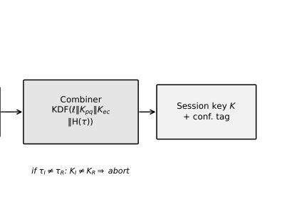
<figcaption class="paper-figure-caption"><b>Fig 1.</b> Fig. 1 Transcript-bound hybrid key establishment. The combiner mixes both component secrets and the transcript hash; an active man-in-the-middle who strips the post-quantum suite changes τ, causing KI ̸= KR and forcing an abort</figcaption>
</figure>
<figure class="paper-figure-card">

<figcaption class="paper-figure-caption"><b>Fig 2.</b> Figure 4 reports handshake computation from the cost model of Section 7.3. The bound hybrid totals 4.43 M cycles across both parties, against 3.96 M for the plain hybrid; transcript binding adds 0.47 M cycles, or 11.8%. The hybrid handshake places 2,386 bytes on the wire (Figure 5); binding adds none. Peak stack is 6,468 bytes, dominated by ML-KEM-768 and within the Class-2 constrained-node memory budget (Table 4). The model is internally consistent: the plain-hybrid cycle count is exactly the sum of the ML-KEM-only and X25519-only handshakes, since the hybrid performs the union of their operations.</figcaption>
</figure>
<figure class="paper-figure-card">
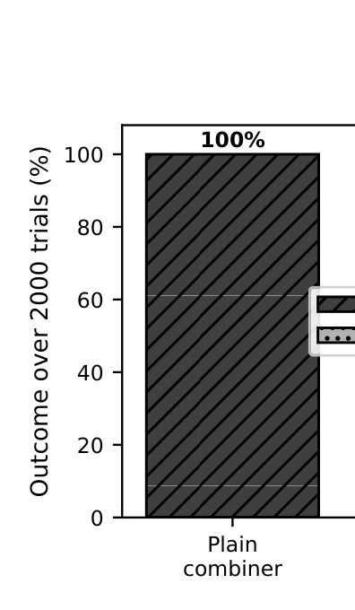
<figcaption class="paper-figure-caption"><b>Fig 3.</b> Fig. 2 Downgrade outcome across 2,000 trials. The plain combiner is silently degraded to the classical suite in every trial; the transcript-bound combiner aborts every attempt</figcaption>
</figure>
<figure class="paper-figure-card">
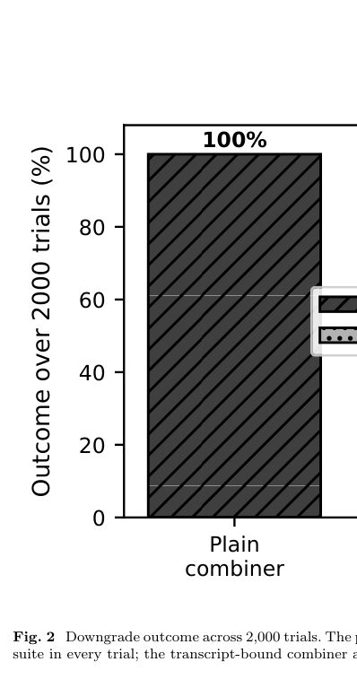
<figcaption class="paper-figure-caption"><b>Fig 4.</b> Figure 6 separates compute from radio energy. For the bound hybrid, compute accounts for 1.83 mJ and radio for 11.45 mJ, making radio 86% of the 13.28 mJ total. Transcript binding is 11.8% of compute energy but only 1.5% of the total handshake budget. The dominant post-quantum cost on a constrained radio link is transmitting the larger ML-KEM-768 key material and ciphertext, not the binding hash. On a five-year CR2032 budget, the radio-inclusive energy supports about 80 bound-hybrid</figcaption>
</figure>
<figure class="paper-figure-card">
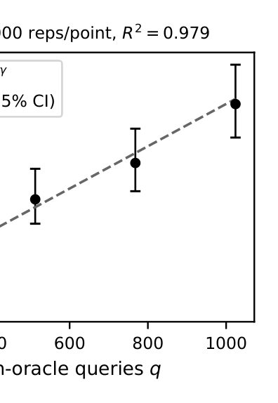
<figcaption class="paper-figure-caption"><b>Fig 5.</b> Fig. 3 Exposed-component distinguisher with 95% confidence intervals. With one component fully broken, key-recovery success grows as q/2γ; the fitted slope tracks the analytic line (R2 = 0.98) and extrapolates below 2−190 at full parameters</figcaption>
</figure>
</div>
<p><strong>Summary.</strong> This paper develops a cryptographic primitive, the Transcript-Bound Combiner, to secure hybrid Post-Quantum Key Establishment protocols. It solves the critical issue of downgrade attacks by cryptographically binding the session key to the entire handshake transcript. The solution is shown to be highly efficient for embedded devices while providing strong, provable security guarantees.</p>
<p><strong>Why it may be interesting.</strong> not directly relevant</p>
<details>
<summary>Detailed structure</summary>
<p><strong>Main problem.</strong> The paper addresses the vulnerability of standalone hybrid Post-Quantum Key Establishment (PQC) combiners to downgrade attacks because they fail to authenticate the negotiation transcript.</p>
<p><strong>Main result.</strong> By modifying the key schedule to bind the derived session key to a hash of the entire handshake transcript, the combiner achieves local downgrade resilience, resisting active attackers who attempt to strip the post-quantum component.</p>
<p><strong>Method.</strong> The authors propose a game-based definition of downgrade resilience and provide a two-sided separation proof showing that transcript binding prevents downgrade attacks with negligible probability.</p>
<p><strong>Model / system.</strong> The model is a cryptographic key schedule combiner that merges a post-quantum KEM (like ML-KEM) with a classical Diffie-Hellman primitive within a hybrid key establishment framework.</p>
<p><strong>Key observables.</strong> The derived session key ($K$) and the integrity of the negotiation transcript ($   au$).</p>
<p><strong>Important parameters / regimes.</strong> The computational overhead of transcript binding is quantified as adding about 11.8% to handshake computation but only 1.5% to radio-inclusive energy on Cortex-M4 devices.</p>
<p><strong>Assumptions / limitations.</strong> The security analysis relies on the random-oracle model, and the cost model is calibrated using specific Cortex-M4 measurements.</p>
<p><strong>Figures summary.</strong> Figure D1 shows that the overhead of transcript-binding remains stable (near 12%) regardless of the number of advertised cryptographic suites.</p>
<p><strong>Paper structure.</strong> The paper defines the problem, proposes the transcript-bound key schedule (Equation 2), proves the two-sided separation theorem, and analyzes the concrete implementation cost using a calibrated model.</p>
</details>
<details>
<summary>Abstract</summary>
<p>Hybrid key establishment runs a post-quantum key-encapsulation mechanism (KEM) alongside a classical Diffie-Hellman primitive, so that the session key stays secure while either component resists attack. This design is now standardized in the Transport Layer Security protocol, Secure Shell, and the Internet Key Exchange, with the standardized module-lattice KEM (ML-KEM) as the post-quantum component. A hybrid KEM secures the derived key, but not the integrity of the negotiation that selects which primitives are used. Full protocols authenticate that negotiation through a handshake transcript; a hybrid KEM deployed as a standalone drop-in primitive, or inside a minimal handshake without transcript authentication, inherits no such guarantee, and an active attacker can strip the post-quantum option. We ask what the key schedule alone must contain to make downgrade resilience a local property of the combiner. We give a game-based definition at the combiner layer and prove a two-sided separation: a combiner that ignores the transcript is downgraded with certainty, whereas one that binds the session key and the confirmation tag to a hash of the transcript blocks every such attempt, up to a term negligible for a 256-bit transcript hash. We also give an explicit strongest-link security bound. Using a calibrated cost model composed from published Cortex-M4 measurements, transcript binding adds one hash per party - about 11.8% of handshake computation but only 1.5% of radio-inclusive energy - and adds no messages or bytes on the wire. Every reported number is produced by a released harness that passes a 30-check validation gate.</p>
</details>
<p><sub><a href="#top">↑ back to top</a></sub></p>

<p><a id="paper-2609.21237"></a></p>
<h3 id="unconditional-quantum-advantage-from-a-two-round-chsh-problem-in-one-dimension"><a href="http://arxiv.org/abs/2609.21237v1">Unconditional quantum advantage from a two-round CHSH problem in one dimension</a></h3>
<p><strong>Authors:</strong> Yonghae Lee, Jeonghyeon Shin, Soojoon Lee<br>
<strong>Type:</strong> theory · <strong>Category:</strong> quantum information and computing · <strong>PDF:</strong> <a href="https://arxiv.org/pdf/2609.21237v1">https://arxiv.org/pdf/2609.21237v1</a><br>
<strong>Analysis basis:</strong> full PDF text, analyzed in chunks</p>
<div class="figure-strip-hint">↔ Scroll figures horizontally</div>
<div class="paper-figures-scroll">
<figure class="paper-figure-card">
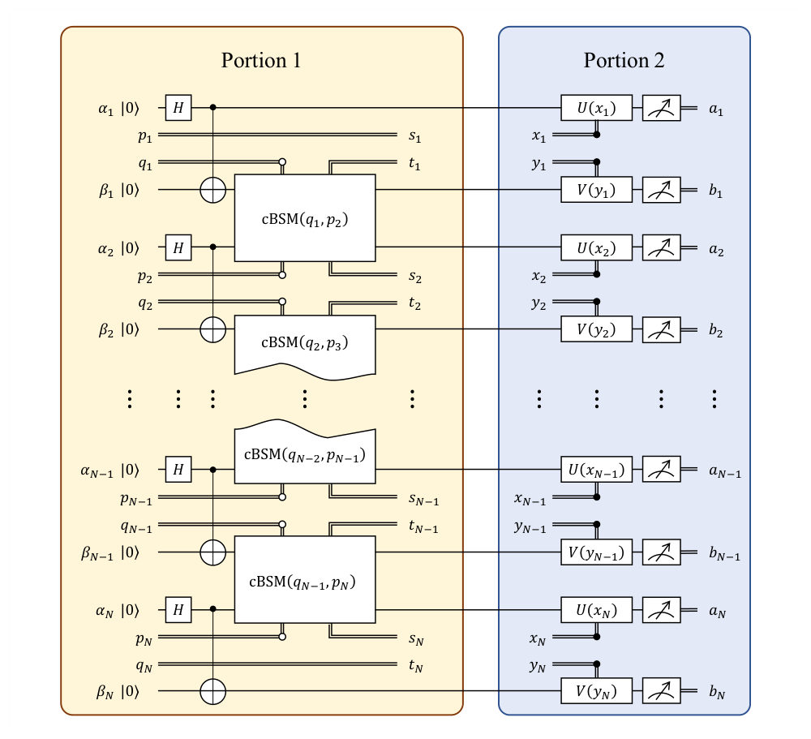
<figcaption class="paper-figure-caption"><b>Fig 1.</b> FIG. 1. Quantum circuit for the 2R1D-CHSH problem. The first portion (left shaded area) receives the input pair (p[j], q[k]) of the first round, distributes entanglement between the selected positions, and generates the output pair (s, t). The second portion (right shaded area) receives the input pair (x, y) of the second round and generates the output pair (a, b) by implementing the CHSH measurements. An open control circle indicates that the corresponding operation is selected when the classical control bit is 0. In particular, cBSM(qi, pi+1) acts when both qi and pi+1 are 0. Each cBSM box includes the selected change to the Bell basis, the computational basis measurements, and the resets...</figcaption>
</figure>
</div>
<p><strong>Summary.</strong> This paper constructs a specific quantum game, the two-round 1D CHSH problem, to demonstrate an unconditional quantum advantage. It shows that a shallow quantum circuit can solve this problem optimally, while any classical circuit attempting to match this performance must exhibit super-polynomial circuit depth. This highlights that quantum advantage does not require perfect success probability or complex connectivity.</p>
<p><strong>Why it may be interesting.</strong> It provides a concrete, physically realizable example demonstrating quantum advantage using only local interactions (1D geometry) and shallow circuits, which is highly relevant for near-term quantum hardware.</p>
<details>
<summary>Detailed structure</summary>
<p><strong>Main problem.</strong> The paper establishes an unconditional quantum advantage by analyzing a relation problem derived from the two-round CHSH game in one dimension (2R1D-CHSH).</p>
<p><strong>Main result.</strong> It proves that the quantum circuit, restricted to a shallow depth and one dimension, achieves the optimal CHSH success probability, while any classical circuit achieving a comparable success probability requires super-polynomial depth ($\Omega(\log N)$).</p>
<p><strong>Method.</strong> The analysis compares the quantum success probability against the average success probability of randomized classical circuits, using techniques involving circuit depth bounding and temporal separation of inputs.</p>
<p><strong>Model / system.</strong> The model is the 2R1D-CHSH problem, implemented on a quantum circuit of $2N$ qubits using only adjacent two-qubit gates with a depth of at most eight.</p>
<p><strong>Key observables.</strong> Quantum success probability ($\omega_q(	ext{CHSH}) = (2+\sqrt{2})/4$) and the required depth of the classical circuit ($\Omega(\log N)$).</p>
<p><strong>Important parameters / regimes.</strong> The separation holds for any fixed $0 \le \delta < (\sqrt{2}-1)/4$. The size parameter is $N$.</p>
<p><strong>Assumptions / limitations.</strong> The quantum circuit is restricted to a one-dimensional geometry, and the classical circuit is assumed to have fixed wiring and bounded gate fan-in.</p>
<p><strong>Figures summary.</strong> Not specified in the notes.</p>
<p><strong>Paper structure.</strong> The paper defines the CHSH game and its generalization, formally defines the 2R1D-CHSH problem, constructs the shallow quantum circuit, bounds the classical performance, and finally combines these results to prove the depth separation.</p>
</details>
<details>
<summary>Abstract</summary>
<p>We introduce a relation problem constructed from the Clauser--Horne--Shimony--Holt (CHSH) game, which we call the two-round one-dimensional CHSH problem. Its two-round structure ensures that the CHSH questions are supplied only after the relevant Pauli-frame data have been fixed, thereby ruling out a simple classical strategy that solves the corresponding problem perfectly when all inputs are supplied simultaneously. We construct a quantum circuit on $2N$ qubits that uses only adjacent two-qubit gates, has operational depth at most eight, and achieves the optimal quantum success probability of CHSH, which is strictly smaller than one. We prove that, for every fixed $0\leqδ<(\sqrt{2}-1)/4$, any randomized classical circuit with fixed wiring and bounded gate fan-in that achieves an average success probability of at least $(2+\sqrt{2})/4-δ$ requires depth $Ω(\log N)$ after the questions of the second round are supplied. This yields an unconditional separation even though the quantum circuit is restricted to a one-dimensional geometry, whereas the classical circuit has no geometric locality restriction. The result shows that perfect quantum success is not necessary for unconditional quantum advantage with shallow circuits.</p>
</details>
<p><sub><a href="#top">↑ back to top</a></sub></p>

<p><a id="paper-2609.21355"></a></p>
<h3 id="weighted-berry-curvature-and-global-geometry-of-mixed-quantum-states"><a href="http://arxiv.org/abs/2609.21355v1">Weighted Berry curvature and global geometry of mixed quantum states</a></h3>
<p><strong>Authors:</strong> Dominik Kuczyński, Erik Sjöqvist<br>
<strong>Type:</strong> theory · <strong>Category:</strong> other · <strong>PDF:</strong> <a href="https://arxiv.org/pdf/2609.21355v1">https://arxiv.org/pdf/2609.21355v1</a><br>
<strong>Analysis basis:</strong> full PDF text, analyzed in chunks</p>
<div class="figure-strip-hint">↔ Scroll figures horizontally</div>
<div class="paper-figures-scroll">
<figure class="paper-figure-card">
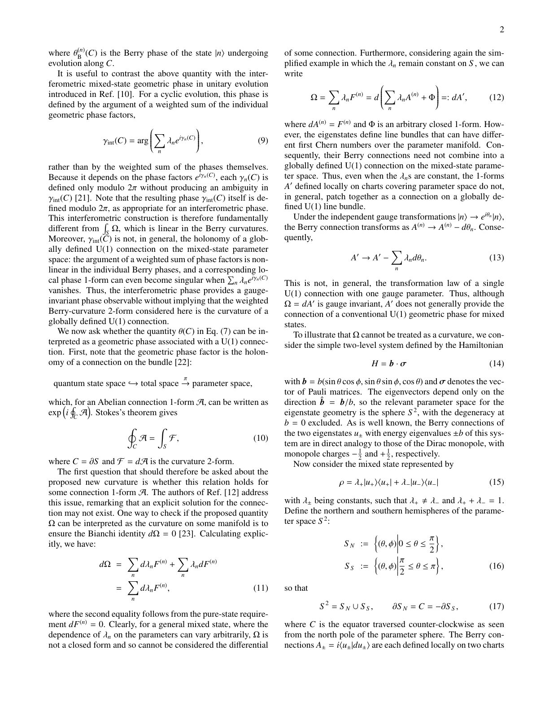
<figcaption class="paper-figure-caption"><b>Fig 1.</b> Low-resolution page preview, page 2</figcaption>
</figure>
<figure class="paper-figure-card">
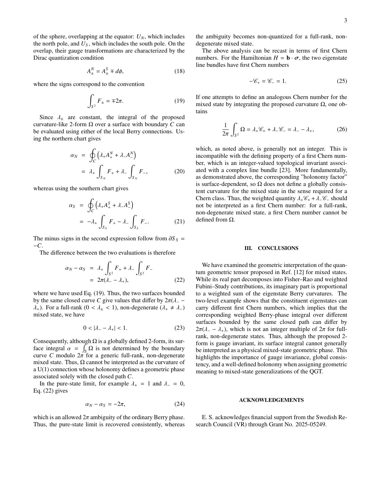
<figcaption class="paper-figure-caption"><b>Fig 2.</b> Low-resolution page preview, page 3</figcaption>
</figure>
<figure class="paper-figure-card">
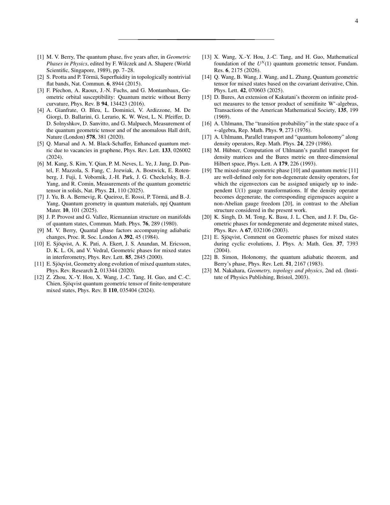
<figcaption class="paper-figure-caption"><b>Fig 3.</b> Low-resolution page preview, page 4</figcaption>
</figure>
</div>
<p><strong>Summary.</strong> This paper rigorously examines the geometric properties of the Quantum Geometric Tensor for mixed quantum states. The authors demonstrate that the imaginary part of this tensor fails to define a globally consistent curvature, as its surface integral is path-dependent and not quantized. This implies that the concept of a topological invariant, like a Chern number, cannot be straightforwardly assigned to the mixed-state geometric phase using this tensor.</p>
<p><strong>Why it may be interesting.</strong> This work directly addresses the topological aspects of quantum geometry for mixed states, which is crucial for understanding decoherence and geometric phases in open quantum systems, linking fundamental geometry to physical observables.</p>
<details>
<summary>Detailed structure</summary>
<p><strong>Main problem.</strong> The paper investigates the geometric interpretation of the imaginary part of the Quantum Geometric Tensor (QGT) for mixed quantum states, specifically questioning if it corresponds to a well-defined curvature for a global U(1) line bundle.</p>
<p><strong>Main result.</strong> The imaginary part of the QGT is generally not a closed form, and its surface integral is found to be surface-dependent and not quantized in integer multiples of $2\pi$, thus failing to define a first Chern number for mixed states.</p>
<p><strong>Method.</strong> The authors employ mathematical analysis, comparing the proposed weighted curvature integral with the Stokes' theorem relation, and use an explicit two-level system model to test the quantization condition.</p>
<p><strong>Model / system.</strong> The analysis focuses on mixed quantum states described by a density operator $
ho$, using a two-level system Hamiltonian $H = \mathbf{b} \cdot \sigma$ whose parameters vary over a parameter space (like $S^2$).</p>
<p><strong>Key observables.</strong> Quantum Geometric Tensor (QGT), its imaginary part $\Omega$, and the resulting surface integral $rac{1}{2\pi} \oint_S \Omega$.</p>
<p><strong>Important parameters / regimes.</strong> The eigenvalues $\lambda_n$ of the density operator, and the path/surface $C$ and $S$ used for integration.</p>
<p><strong>Assumptions / limitations.</strong> The analysis assumes the existence of a connection whose curvature should yield a topological invariant (like a Chern number), which is tested against the mixed-state QGT.</p>
<p><strong>Paper structure.</strong> The paper first introduces the QGT for mixed states, then analyzes the mathematical closure condition ($d\Omega=0$) for the imaginary part $\Omega$. It proceeds to test this condition using a two-level system example, comparing surface integrals over different charts to demonstrate the lack of path/surface independence required for a topological invariant.</p>
</details>
<details>
<summary>Abstract</summary>
<p>We examine the geometric interpretation of the quantum geometric tensor proposed in [Phys. Rev. B {\bf 110}, 035404 (2024)] for mixed quantum states, focusing on its imaginary part, which is proportional to a weighted sum of the Berry curvatures of the eigenstates of the density operator. While the real part naturally decomposes into Fisher--Rao and weighted Fubini--Study contributions, we show that the imaginary part does not, in general, coincide with the curvature of a connection on a globally defined U(1) line bundle whose holonomy yields a mixed-state geometric phase. Using a two-level system as an explicit example, we demonstrate that its surface integral depends on the choice of surface bounded by the same closed path, with ambiguities that are not integer multiples of $2π$.</p>
</details>
<p><sub><a href="#top">↑ back to top</a></sub></p>

<p><a id="paper-2609.21567"></a></p>
<h3 id="weighted-quantum-signal-processing-low-depth-polynomial-approximation-with-applications-to-kolmogorov-arnold-networks"><a href="http://arxiv.org/abs/2609.21567v1">Weighted Quantum Signal Processing: Low-Depth Polynomial Approximation with Applications to Kolmogorov-Arnold Networks</a></h3>
<p><strong>Authors:</strong> Rohit Sarma Sarkar, Rupayan Bhattacharjee, Elias F. Combarro, Michele Grossi, Lirandë Pira, Carmen G. Almudéver, Sergi Abadal, Eduard Alarcon<br>
<strong>Type:</strong> theory · <strong>Category:</strong> quantum information and computing · <strong>PDF:</strong> <a href="https://arxiv.org/pdf/2609.21567v1">https://arxiv.org/pdf/2609.21567v1</a><br>
<strong>Analysis basis:</strong> full PDF text, analyzed in chunks</p>
<div class="figure-strip-hint">↔ Scroll figures horizontally</div>
<div class="paper-figures-scroll">
<figure class="paper-figure-card">
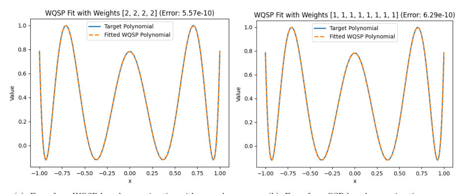
<figcaption class="paper-figure-caption"><b>Fig 1.</b> Figure 1. WQSP fitting of a real 8 degree target polynomial P(x) = c1T0 + c2T4 + c3T8 with weight partition (2, 2, 2, 2) and whose coefficients are randomly generated. The WQSP fitting in 1a is compared with the standard QSP fitting as depicted 1b.</figcaption>
</figure>
<figure class="paper-figure-card">
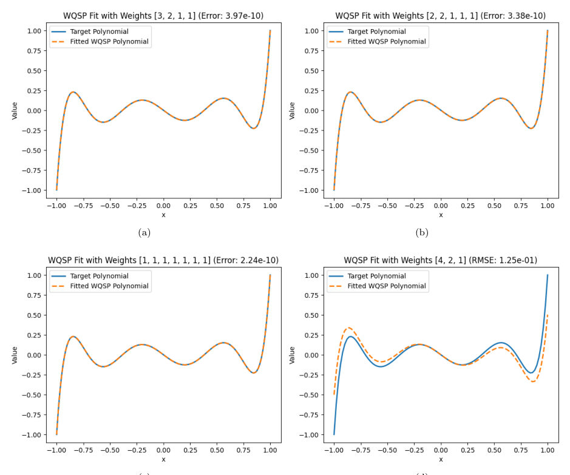
<figcaption class="paper-figure-caption"><b>Fig 2.</b> Figure 2. WQSP fitting of a real 7 degree target polynomial (fixed odd parity) with different weight partitions whose coefficients are randomly generated. In 2a and 2b the weight partitions are respectively (3, 2, 1, 1) and (2, 2, 1, 1, 1) whose weight vector lengths are greater than or equal to the coefficient vector length and thus the necessary degrees of freedom are achieved. For 2c, we have the QSP case which produces an error of a similar order compared to 2a and 2b. In 2d, we see that the weight vector length is less than the coefficient vector length and thus such a setup doesn’t cross the degrees of freedom which incurs a higher error.</figcaption>
</figure>
<figure class="paper-figure-card">
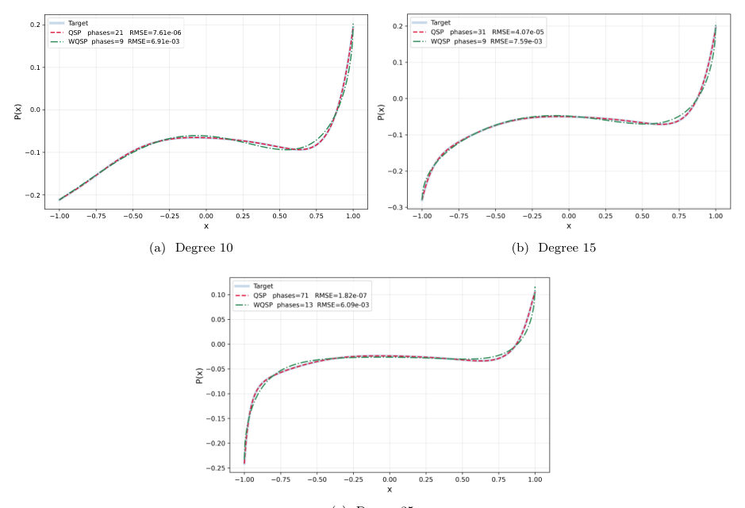
<figcaption class="paper-figure-caption"><b>Fig 3.</b> Figure 3. WQSP fitting results for random real polynomials of degrees 10, 15 and 35 whose Chebyshev coefficients were independently sampled respectively from the uniform distribution U[−1/11, 1/11], U[−1/16, 1/16] and U[−1/36, 1/36]. For both QSP and WQSP, the polynomial was first broken into odd and even components and the corresponding approx- imation errors were added up. The weight vectors for WQSP are chosen for degree 10 : [2, 2, 2, 4](even part),[1, 2, 2, 4] (odd part). For degree 15 : [1, 2, 4, 8](odd part), [1, 1, 4, 8] (even part). For degree 35 : [1, 2, 2, 2, 4, 8, 16](odd part), [2, 2, 2, 4, 8, 16](even part).</figcaption>
</figure>
<figure class="paper-figure-card">
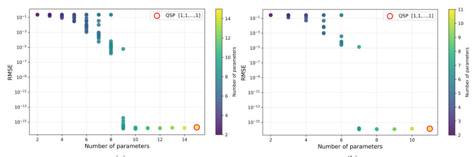
<figcaption class="paper-figure-caption"><b>Fig 4.</b> Figure 4. WQSP fitting error across all partitions for a real degree-14 (4a) and degree-10 (4b) polynomial. Polynomial coefficients were generated by uniformly sampling from [−1/8, 1/8] and [−1/6, 1/6], respectively, and approximated using WQSP. Phase parameters were optimized using the Levenberg–Marquardt method with 20 random restarts, and the solution achieving the lowest approximation error was reported.</figcaption>
</figure>
<figure class="paper-figure-card">
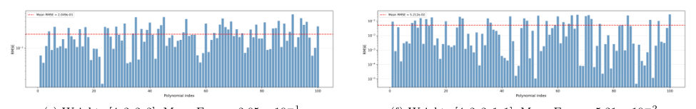
<figcaption class="paper-figure-caption"><b>Fig 5.</b> Figure 5. Illustration of approximating real degree 10 polynomials using learning based WQSP under different par- titions of 10. A total of 100 random polynomials were generated by sampling Chebyshev coefficients uniformly from [−1/11, 1/11]. For each polynomial and partition, phase optimization was performed using the Levenberg–Marquardt method with 20 random restarts, and the minimum approximation error was retained. Each subfigure is labeled by the corresponding partition, with the first subfigure representing standard QSP.</figcaption>
</figure>
</div>
<p><strong>Summary.</strong> This paper introduces Weighted Quantum Signal Processing (WQSP) as an advanced quantum framework to overcome the parameter and depth limitations of standard QSP for polynomial approximation. By strategically weighting the quantum circuit layers, WQSP achieves significant parameter compression while maintaining high approximation fidelity. This efficient method is successfully applied to create quantum-enhanced, parameter-efficient activation functions for Kolmogorov–Arnold Networks.</p>
<p><strong>Why it may be interesting.</strong> While focused on polynomial approximation, the development of WQSP represents a novel, structured quantum circuit primitive that could be adapted to encode complex Hamiltonians or quantum state preparation protocols in quantum simulation or quantum machine learning algorithms.</p>
<details>
<summary>Detailed structure</summary>
<p><strong>Main problem.</strong> Standard Quantum Signal Processing (QSP) is limited by circuit depth and parity constraints when approximating high-degree polynomials. The goal is to develop a more efficient quantum framework for this task.</p>
<p><strong>Main result.</strong> Weighted Quantum Signal Processing (WQSP) provides a compact, flexible, and parameter-efficient alternative to QSP, achieving comparable approximation quality with significantly fewer trainable parameters and shallower circuits.</p>
<p><strong>Method.</strong> The authors introduce WQSP, an extension of QSP that incorporates a weight function into the central rotation operator, allowing for structured control over the circuit's expressivity.</p>
<p><strong>Model / system.</strong> The work is based on quantum circuits used for polynomial approximation, specifically applied to parameterizing learnable activation functions within Kolmogorov–Arnold Networks (KANs).</p>
<p><strong>Key observables.</strong> Approximation error (RMSE), number of trainable parameters, and circuit depth.</p>
<p><strong>Important parameters / regimes.</strong> The choice of integer weights ($w_j$) is crucial, as it dictates the parameter reduction, achieving exponential reductions in parameters for polynomial realization.</p>
<p><strong>Assumptions / limitations.</strong> The analysis often assumes the target function can be decomposed into even and odd parts for parity constraints, and the initial focus is on real-valued functions.</p>
<p><strong>Figures summary.</strong> Figures compare the Root Mean Square Error (RMSE) versus the number of parameters for WQSP-KANs versus QSP-KANs, demonstrating WQSP's superior parameter efficiency while maintaining accuracy.</p>
<p><strong>Paper structure.</strong> The paper builds from the limitations of QSP, introduces WQSP as an improvement, analyzes its performance in the integer weight regime, and culminates in applying the framework to parameterize KANs for multivariate function approximation.</p>
</details>
<details>
<summary>Abstract</summary>
<p>Quantum Signal Processing is a powerful quantum framework for generating and approximating univariate polynomials. However, QSP is often limited by circuit-depth bottlenecks and parity constraints on the class of realizable polynomials. In this work, we introduce Weighted Quantum Signal Processing, an extension of QSP in which a weight function is assigned to the central rotation operator. This formulation provides a deeper understanding of QSP, which emerges as the special case of WQSP with unit weights. The choice of weights determines the structure and expressive capabilities of WQSP circuits. When the weights are natural numbers greater than one, WQSP reduces to a pruned version of QSP, revealing parameter redundancies in the standard framework. Through appropriate selection of integer weights, WQSP achieves linear-to-exponential reductions in the number of parameters required to realize arbitrary bounded univariate polynomials while preserving approximation quality. For generic weights, we establish corresponding approximation error bounds and show that, in many cases, the approximation is exact. We analyze WQSP from both a deterministic perspective, where polynomial generation is formulated as the solution of a linear system, and a quantum machine learning perspective, where WQSP serves as a structured and expressive quantum learning model. We further employ this learning framework to parameterize learnable activation functions in Kolmogorov--Arnold Networks for multivariate function approximation. Our results show that WQSP provides a compact, flexible, and theoretically grounded framework for realizing arbitrary univariate polynomials while requiring significantly fewer trainable parameters than conventional QSP. This yields expressive and parameter-efficient neural architectures, highlighting the potential of WQSP as a scalable primitive for quantum-enhanced machine learning.</p>
</details>
<p><sub><a href="#top">↑ back to top</a></sub></p>
</details>
<h2 id="secondary-cond-mat-archives">Secondary cond-mat archives</h2>
<p><em>Papers from cond-mat.mtrl-sci, mes-hall, other, soft, supr-con. These archives are de-prioritized — they appear at the end regardless of relevance score.</em></p>
<h3 id="relevant-in-secondary-archives-14">Relevant in secondary archives (14)</h3>

<p><a id="paper-2609.20990"></a></p>
<h3 id="singular-high-harmonic-transport-above-a-quantum-threshold"><a href="http://arxiv.org/abs/2609.20990v1">Singular high-harmonic transport above a quantum threshold</a></h3>
<p><strong>Authors:</strong> Yugo Onishi, Su-Yang Xu, Liang Fu<br>
<strong>Type:</strong> theory · <strong>Category:</strong> other · <strong>PDF:</strong> <a href="https://arxiv.org/pdf/2609.20990v1">https://arxiv.org/pdf/2609.20990v1</a><br>
<strong>Analysis basis:</strong> full PDF text, analyzed in chunks
<strong>Topic relevance:</strong> 🔥 <code>non-equilibrium universality</code> <strong>4/5</strong> · <code>Keldysh / 2PI / non-Gaussian methods</code> <strong>2/5</strong> · <code>methods for driven-dissipative</code> <strong>2/5</strong> · <code>driven-dissipative phase transition</code> <strong>1/5</strong></p>
<div class="figure-strip-hint">↔ Scroll figures horizontally</div>
<div class="paper-figures-scroll">
<figure class="paper-figure-card">
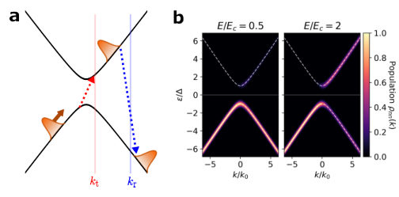
<figcaption class="paper-figure-caption"><b>Fig 1.</b> FIG. 1. Landau-Zener tunneling and relaxation. (a) Elec- trons tunnel from the valence band to the conduction band within |k| ≲kt and relax over the scale |k| ∼kr. (b) Electron population at finite field calculated with Eq. (5); dashed lines show the band dispersion. k0 = ∆/(ℏv). The relaxation time is τ = 5.0ℏ/∆.</figcaption>
</figure>
<figure class="paper-figure-card">
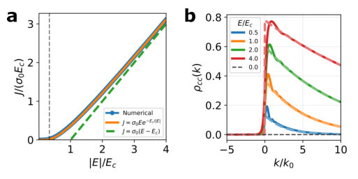
<figcaption class="paper-figure-caption"><b>Fig 2.</b> FIG. 2. Comparison with the numerical solution of Eq. (7). (a) Current–voltage relation of the 1D massive Dirac model. The orange line shows Eq. (15); the black dashed line marks the onset field E ≈0.336Ec, defined by the peak of d2J  dE2 . (b) Conduction-band population in momentum space. Dashed lines show Eq. (14). k0 = ∆/(ℏv). Both cal- culations use τ = 5.0ℏ/∆.</figcaption>
</figure>
<figure class="paper-figure-card">
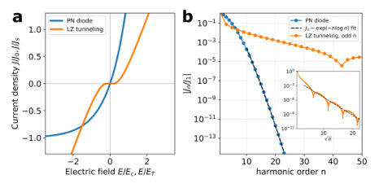
<figcaption class="paper-figure-caption"><b>Fig 3.</b> FIG. 3. Comparison of high-harmonic transport from 1D Landau-Zener (LZ) tunneling and an ideal PN diode. (a) Current–voltage relations for the PN diode, J(E) = Js[eE/ET −1], and LZ tunneling, Eq. (15). (b) Harmonic amplitudes for E0 = 5.0 and ET = Ec = 1.0. The dashed line shows the super-exponential decay exp[−O(n log n)]; the dashed line in the inset shows the sub-exponential decay exp[−O(√n)].</figcaption>
</figure>
<figure class="paper-figure-card">

<figcaption class="paper-figure-caption"><b>Fig 4.</b> FIG. 4. High-harmonic transport from 1D Landau-Zener tun- neling. (a) Harmonic amplitude Jn versus drive amplitude E0. (b) Rescaled amplitude (−1)(n+1)/2nJn/J0 versus E0/(nEc). The black dashed line is the scaling function f(x) in Eq. (23); the inset enlarges the small-E0/(nEc) region.</figcaption>
</figure>
<figure class="paper-figure-card">
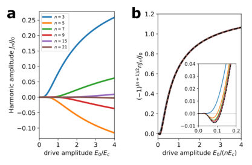
<figcaption class="paper-figure-caption"><b>Fig 5.</b> Fig. 4, which agrees well with Jn at large n and relatively large E0/(nEc) ≳0.1. We note that the enhancement of the high harmonics and the scaling law originate from a current–voltage re- lation with a sharp onset behavior, and we expect that they do not depend on details of the singularity in the current–voltage relation (also see SM). Higher dimensions. — Higher-dimensional systems can be treated as families of 1D momentum-space slices. In contrast to 1D cases, the singular response survives when the full system is gapless at an isolated point, be- cause almost all slices retain a finite effective gap. For example, near the gap minimum of a 2D system, the linearized k · p Hamiltonian is</figcaption>
</figure>
</div>

<p><strong>Summary.</strong> This theoretical work analyzes the strong-field transport in band insulators exhibiting a quantum power threshold. It shows that the resulting singular current-voltage relation generates high-harmonic radiation whose amplitude decays sub-exponentially. The authors derive universal scaling laws governing these harmonics, offering a pathway for THz generation in solids.</p>
<p><strong>Why it may be interesting.</strong> The study of non-equilibrium, strong-field quantum transport, particularly the emergence of universal scaling laws for high harmonics, connects fundamental quantum tunneling physics to observable THz generation phenomena.</p>
<details>
<summary>Detailed structure</summary>
<p><strong>Main problem.</strong> The paper investigates the nonperturbative, strong-field transport in band insulators, specifically characterizing the singular high-harmonic generation resulting from a quantum power threshold.</p>
<p><strong>Main result.</strong> The current exhibits a singular DC-voltage relation due to Landau-Zener tunneling, leading to high-harmonic generation whose amplitude decays sub-exponentially with harmonic order, following a derived scaling law.</p>
<p><strong>Method.</strong> The analysis uses the quantum master equation in the steady state, followed by Fourier analysis and the saddle-point approximation to derive asymptotic scaling laws for the harmonic components.</p>
<p><strong>Model / system.</strong> The model is a small-gap insulator, initially treated as a 1D system governed by a massive Dirac Hamiltonian. Transport is driven by interband tunneling, characterized by a quantum power threshold $w_Q$.</p>
<p><strong>Key observables.</strong> DC current-voltage relation $J(E)$, and the high-harmonic current amplitudes $J_n$ at frequency $n\omega$.</p>
<p><strong>Important parameters / regimes.</strong> The quantum power threshold $w_Q = \Delta^2/\hbar$, and the characteristic field scale $E_c = \pi\Delta^2 / \hbar v e$.</p>
<p><strong>Assumptions / limitations.</strong> Approximations include the relaxation time approximation (RTA) and the use of the saddle-point method for evaluating Fourier integrals, assuming the main contribution comes from the singularity near $E=0$.</p>
<p><strong>Figures summary.</strong> Figures compare the calculated $J-V$ relation to numerical solutions, contrast the sub-exponential decay of harmonics from singular transport against super-exponential decay from analytic models, and illustrate the collapse of harmonic amplitudes onto a universal scaling function.</p>
<p><strong>Paper structure.</strong> The paper builds from establishing the singular DC current-voltage relation via Landau-Zener tunneling in a 1D model, then extends this to AC transport by analyzing the Fourier components, deriving universal scaling laws, and comparing these results to other transport regimes.</p>
</details>
<details>
<summary>Abstract</summary>
<p>We show that Landau-Zener tunneling in a small-gap insulator produces a singular DC current--voltage relation, and correspondingly, strong high-harmonic generation in AC transport. Remarkably, high-harmonic responses decrease subexponentially with harmonic order, which is parametrically slower than in ordinary conductors and PN diodes. We further derive a scaling law for the current amplitude at frequency $nω$ produced by the applied electric field $E$ at fundamental frequency $ω$. Our work offers a promising route to THz generation based on frequency multiplication in solids.</p>
</details>
<p><sub><a href="#top">↑ back to top</a></sub></p>

<p><a id="paper-2609.21375"></a></p>
<h3 id="topological-optical-frequency-combs"><a href="http://arxiv.org/abs/2609.21375v1">Topological Optical Frequency Combs</a></h3>
<p><strong>Authors:</strong> Rujiang Li, Wenfu Zhang<br>
<strong>Type:</strong> theory · <strong>Category:</strong> other · <strong>PDF:</strong> <a href="https://arxiv.org/pdf/2609.21375v1">https://arxiv.org/pdf/2609.21375v1</a><br>
<strong>Analysis basis:</strong> full PDF text, analyzed in chunks
<strong>Topic relevance:</strong> <code>analog quantum simulation</code> <strong>3/5</strong> · <code>driven-dissipative phase transition</code> <strong>3/5</strong> · <code>interference shaping light</code> <strong>3/5</strong> · <code>Keldysh / 2PI / non-Gaussian methods</code> <strong>1/5</strong> · <code>methods for driven-dissipative</code> <strong>1/5</strong> · <code>non-equilibrium universality</code> <strong>1/5</strong></p>
<div class="figure-strip-hint">↔ Scroll figures horizontally</div>
<div class="paper-figures-scroll">
<figure class="paper-figure-card">

<figcaption class="paper-figure-caption"><b>Fig 1.</b> FIG. 1. Roadmap of topological optical frequency combs (OFCs). In the early stages, OFCs were realized using mode-locked lasers. Then the advent of high-quality factor (Q) optical microresonators led to the emergence of microresonator-based OFCs, known as microcombs. Recently, topological photonics, rooted in the introduction of topological phases into photonics, has converged with OFCs, resulting in the emergence of topological OFCs. Future development directions for topological OFCs may include exploring novel nonlinear dynamics, incorporating various types of topological phases, and discovering emerging applications. The inset beneath the “Microcombs” guidepost depicts a typical...</figcaption>
</figure>
</div>

<p><strong>Summary.</strong> This perspective reviews the evolution of optical frequency combs, detailing the shift from bulk lasers to integrated microresonators. It emphasizes the breakthrough concept of Topological OFCs, which utilize arrays of coupled resonators to generate nested combs protected by topological edge states. This advances the field toward more robust and scalable photonic light sources.</p>
<p><strong>Why it may be interesting.</strong> This work sits at the intersection of quantum optics and condensed matter physics, specifically bridging nonlinear wave dynamics (solitons) with topological protection, which is highly relevant for developing robust quantum light sources.</p>
<details>
<summary>Detailed structure</summary>
<p><strong>Main problem.</strong> The paper addresses the development of advanced, miniaturized light sources by exploring the generation of Topological Optical Frequency Combs (T-OFCs). It seeks to advance OFC technology beyond conventional microresonators by incorporating topological photonics principles.</p>
<p><strong>Main result.</strong> The key result is the theoretical and experimental demonstration of T-OFCs generated in arrays of coupled microresonators, which exhibit nested spectral structures due to topological edge states.</p>
<p><strong>Method.</strong> The work combines nonlinear wave physics (soliton dynamics, Kerr nonlinearity) with topological concepts (topological invariants, edge states) in integrated photonic platforms.</p>
<p><strong>Model / system.</strong> The physical systems include arrays of coupled microresonators (e.g., SiN, LiNbO3) engineered to mimic topological structures, allowing light propagation in robust edge channels.</p>
<p><strong>Key observables.</strong> Nested spectral comb structure, unidirectional photonic modes, and the existence of topologically protected edge states.</p>
<p><strong>Important parameters / regimes.</strong> High-Q factor, Kerr nonlinearity ($\chi^{(3)}$), array coupling strength, and topological invariants.</p>
<p><strong>Assumptions / limitations.</strong> The primary assumption is that coupling resonators into arrays can induce topological phases, and that nonlinear effects (solitons) can manifest within these topologically protected edge states.</p>
<p><strong>Figures summary.</strong> Figure 1 illustrates the technological roadmap: progressing from bulky mode-locked lasers to single-resonator microcombs, culminating in the array-based topological OFCs.</p>
<p><strong>Paper structure.</strong> The paper provides a historical perspective on OFCs, detailing the evolution from early lasers to microcombs, and then focusing heavily on the theoretical framework and recent experimental breakthroughs involving topological photonics to realize T-OFCs.</p>
</details>
<details>
<summary>Abstract</summary>
<p>Optical frequency combs (OFCs) are revolutionary light sources characterized by discrete and equally spaced spectral lines, and they have found widespread applications in metrology, spectroscopy, and communications. In the early stages, OFCs were realized using mode-locked lasers. With advancements in the fabrication of high-quality factor ($Q$) microresonators and the increasing demand for miniaturized and integrable photonic chips, microresonator-based OFCs, commonly referred to as microcombs, have been developed. Although early studies of microcombs primarily focused on single microresonators or a few resonators, a significant breakthrough occurred in 2021 when it was theoretically predicted that light propagating in the topological edge channel of an array of ring resonators could generate nested frequency combs known as topological OFCs. Since then, the field of topological OFCs has progressed rapidly, with experimental observations made in 2024. This Perspective will introduce the history of OFCs, placing particular emphasis on the emergence and development of topological OFCs, as well as exploring the research challenges and opportunities associated with them.</p>
</details>
<p><sub><a href="#top">↑ back to top</a></sub></p>

<p><a id="paper-2609.21091"></a></p>
<h3 id="defect-mediated-orientational-ordering-in-stripe-forming-magnetic-systems"><a href="http://arxiv.org/abs/2609.21091v1">Defect-mediated orientational ordering in stripe-forming magnetic systems</a></h3>
<p><strong>Authors:</strong> Premarun Barik, Johan van Lierop, Robert L. Stamps<br>
<strong>Type:</strong> theory · <strong>Category:</strong> statistical mechanics · <strong>PDF:</strong> <a href="https://arxiv.org/pdf/2609.21091v1">https://arxiv.org/pdf/2609.21091v1</a><br>
<strong>Analysis basis:</strong> full PDF text, analyzed in chunks
<strong>Topic relevance:</strong> <code>non-equilibrium universality</code> <strong>3/5</strong> · <code>methods for driven-dissipative</code> <strong>2/5</strong> · <code>analog quantum simulation</code> <strong>1/5</strong></p>
<div class="figure-strip-hint">↔ Scroll figures horizontally</div>
<div class="paper-figures-scroll">
<figure class="paper-figure-card">
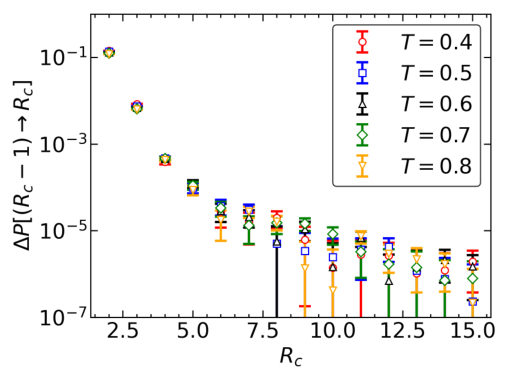
<figcaption class="paper-figure-caption"><b>Fig 1.</b> FIG. 1. Convergence with dipolar-interaction cutoff. Change in the single-spin transition probability, ∆P = P(Rc) − P(Rc + 1), when the dipolar cutoff is increased by one lattice spacing. Results are averaged over 1000 independent config- urations and are shown for several temperatures. The mag- nitude of ∆P decreases rapidly with Rc and is of order 10−5</figcaption>
</figure>
<figure class="paper-figure-card">
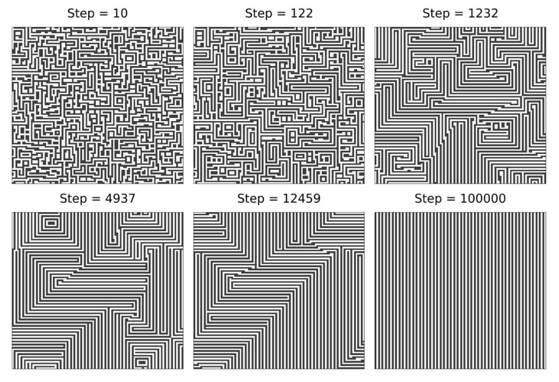
<figcaption class="paper-figure-caption"><b>Fig 2.</b> FIG. 2. Representative snapshots of stripe evolution following a quench from a random configuration to T = 0.5. Local horizontal and vertical stripe regions grow with time, eventually producing a globally ordered stripe state. Snapshots are shown at t=10, 122, 1232, 4937, 12459, and 100000 Monte Carlo steps.</figcaption>
</figure>
<figure class="paper-figure-card">
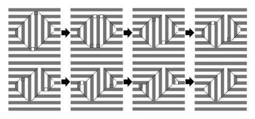
<figcaption class="paper-figure-caption"><b>Fig 3.</b> FIG. 4. A schematic illustration of T-junction motion lead- ing to the shrinkage of a vertical diamond-shaped super- domain. The small boxes indicate regions where spin flips are most probable, resulting in successive displacement of the T-junctions and reduction of the super-domain area. Black lines are included as guides to the eye to identify the super- domain boundary.</figcaption>
</figure>
<figure class="paper-figure-card">
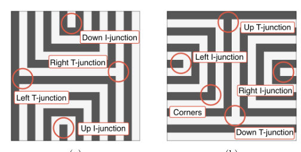
<figcaption class="paper-figure-caption"><b>Fig 4.</b> FIG. 3. Schematic illustration of the different defect types associated with orientational super-domains. (a) Horizontal super-domain embedded in a vertical-stripe background. The boundary contains left and right T-junctions together with up and down I-junctions. (b) Vertical super-domain embedded in a horizontal-stripe background. In this case, the boundary contains up and down T-junctions together with left and right I-junctions. Representative corners along the super-domain boundary are also indicated.</figcaption>
</figure>
<figure class="paper-figure-card">
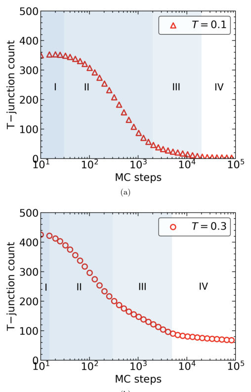
<figcaption class="paper-figure-caption"><b>Fig 5.</b> FIG. 6. Evolution of the T-junction count with Monte Carlo steps for L = 100 and δ = 1.1 at (a) T = 0.1 and (b) T = 0.3. The shaded regions, labelled I–IV, indicate four successive stages of the evolution. In regime I, the T-junction population increases as locally formed horizontal and vertical stripes or- ganize into orientational super-domains. In regime II, the T- junction count decreases as the super-domains reorganize and grow through the motion and elimination of their boundary defects. Regime III corresponds to the single-super-domain stage, where one stripe orientation occupies most of the sys- tem, and the rate of T-junction elimination decreases as only a small number of residual...</figcaption>
</figure>
</div>

<p><strong>Summary.</strong> This work develops a microscopic theory for how stripe-forming magnetic systems achieve global orientational order after a sudden quench. It demonstrates that this ordering process is governed by the dynamics of topological defects, particularly T-junctions, which move and eliminate over time. The key finding is the quantitative link between tracking these defects in real space and observing corresponding changes in the system's structure factor in reciprocal space.</p>
<p><strong>Why it may be interesting.</strong> The connection drawn between the dynamics of topological defects (T-junctions) in real space and the measurable signatures in the structure factor (reciprocal space) provides a powerful, generalizable diagnostic tool for studying non-equilibrium ordering in complex many-body systems.</p>
<details>
<summary>Detailed structure</summary>
<p><strong>Main problem.</strong> The paper investigates the non-equilibrium process by which a two-dimensional stripe-forming magnetic system develops global orientational order following a quench.</p>
<p><strong>Main result.</strong> Global order is shown to be mediated by the motion and elimination of topological defects, specifically T-junctions, which provides a microscopic, defect-based description of the ordering process.</p>
<p><strong>Method.</strong> The study uses Monte Carlo simulations to track the real-space evolution of spin configurations and compares these defect dynamics to signatures observed in the structure factor in reciprocal space.</p>
<p><strong>Model / system.</strong> The system is a 2D stripe-forming magnetic model described by an Ising Hamiltonian incorporating nearest-neighbor exchange and long-range dipolar interactions. The evolution is studied by quenching the system into the stripe-ordered regime.</p>
<p><strong>Key observables.</strong> T-junctions, corners, I-junctions (defects), the T-junction population dynamics, and the structure factor in reciprocal space.</p>
<p><strong>Important parameters / regimes.</strong> Temperature (T), relative strength of interactions (delta), and system size. The dynamics are characterized by distinct regimes (formation, growth, equilibration).</p>
<p><strong>Assumptions / limitations.</strong> The dipolar interaction is approximated using a finite cut-off radius (Rc), and the analysis relies on comparing real-space defect elimination rates with reciprocal-space structure factor changes.</p>
<p><strong>Figures summary.</strong> Figures illustrate stripe pattern evolution after a quench, showing defect formation and subsequent elimination leading to global order. Another figure compares defect elimination rates measured in real space versus reciprocal space.</p>
<p><strong>Paper structure.</strong> The paper establishes the physical model, details the simulation methodology (quenching, defect tracking), analyzes the time evolution through distinct dynamical regimes based on defect counts, and finally confirms the microscopic mechanism by showing the correspondence between real-space defect decay and reciprocal-space structure factor sharpening.</p>
</details>
<details>
<summary>Abstract</summary>
<p>We investigate the nonequilibrium development of orientational order in a two-dimensional stripe-forming magnetic system with competing interactions. Following a quench into the stripe-ordered regime, horizontal and vertical stripes organize into orientational regions(super-domains) separated by characteristic defects. We show that the evolution towards a globally oriented stripe state is mediated by the motion and elimination of these defects, with T-junctions providing a direct microscopic measure of super-domain reorganization. The T-junction population reveals distinct dynamical regimes associated with super-domain formation, growth, and equilibration. Temperature, system size, and equilibrium stripe width modify the characteristic time scales of this evolution, while thermal fluctuations produce a finite defect population at higher temperatures. We further show that the defect dynamics observed in real space are reflected in the structure factor, providing a reciprocal-space signature of defect elimination. These results establish a microscopic defect-based description of orientational ordering in stripe-forming magnetic systems.</p>
</details>
<p><sub><a href="#top">↑ back to top</a></sub></p>

<p><a id="paper-2609.21725"></a></p>
<h3 id="collective-excitation-mediated-transport-in-nanoscale-josephson-junctions-that-exhibit-quantum-confinement"><a href="http://arxiv.org/abs/2609.21725v1">Collective excitation-mediated transport in nanoscale Josephson junctions that exhibit quantum confinement</a></h3>
<p><strong>Authors:</strong> Zhengyuan Liu, Sebastian Scherb, Werner M. J. van Weerdenburg, Daniel Wegner, Nadine Hauptmann, Alexander A. Khajetoorians<br>
<strong>Type:</strong> experiment · <strong>Category:</strong> other · <strong>PDF:</strong> <a href="https://arxiv.org/pdf/2609.21725v1">https://arxiv.org/pdf/2609.21725v1</a><br>
<strong>Analysis basis:</strong> full PDF text, analyzed in chunks
<strong>Topic relevance:</strong> <code>correlated / nonlocal dissipation</code> <strong>3/5</strong> · <code>Keldysh / 2PI / non-Gaussian methods</code> <strong>1/5</strong></p>
<div class="figure-strip-hint">↔ Scroll figures horizontally</div>
<div class="paper-figures-scroll">
<figure class="paper-figure-card">
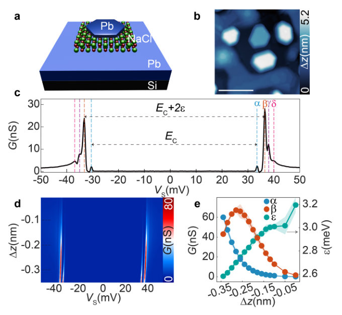
<figcaption class="paper-figure-caption"><b>Fig 1.</b> Figure 1. Coulomb blockade and collective excitations in Pb/NaCl/Pb stack. a Schematic of the Pb/NaCl/Pb stack grown on Si(111). b STM image showing four stacks with overlayer of thickness that ranges from 11 ML to 17 ML (VS = 2 V, It = 20 pA, scale bar is 10 nm). c Point dI/dV spectra taken on top of a typical stack with a 15 ML overlayer (VS = 50 mV, It = 165 pA, Vmod = 500 𝜇V). d Point dI/dV spectra taken on the same stack as in c at different tip-sample separation (∆z). ∆z = 0 refers to stabilization at VS = 150 mV, It = 200 pA. e Intensity of peak 𝛼 and 𝛽 and collective excitation energy 𝜀 as a function of ∆z. Error bars in e obtained from Gaussian fitting of each peak and indicated by...</figcaption>
</figure>
<figure class="paper-figure-card">
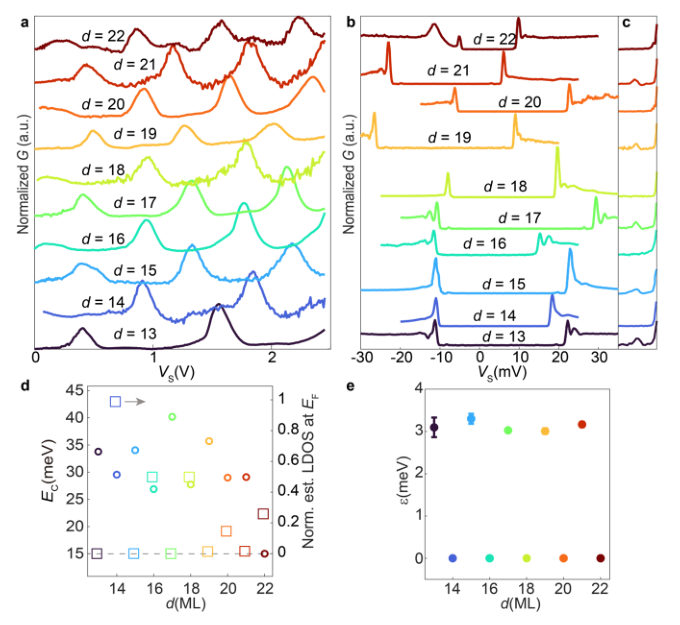
<figcaption class="paper-figure-caption"><b>Fig 2.</b> Figure 2. Quantum oscillations of Coulomb gap and the collective excitation. a Normalized point dI/dV spectra taken on stacks with overlayer thickness ranges from 13 ML to 22 ML (VS = 2.5 V, It = 200 pA, Vmod = 10 mV). b Normalized point dI/dV spectra taken on the same stacks as in a. (VS = 30 mV, It = 200 pA, Vmod = 500 V). c Zoomed-in spectra for better view of the inelastic excitation peaks. d Coulomb gap (EC) and normalized estimated-LDOS at the Fermi energy as a function of overlayer thickness. e Collective excitation energy 𝜀 as a function of overlayer thickness.</figcaption>
</figure>
<figure class="paper-figure-card">
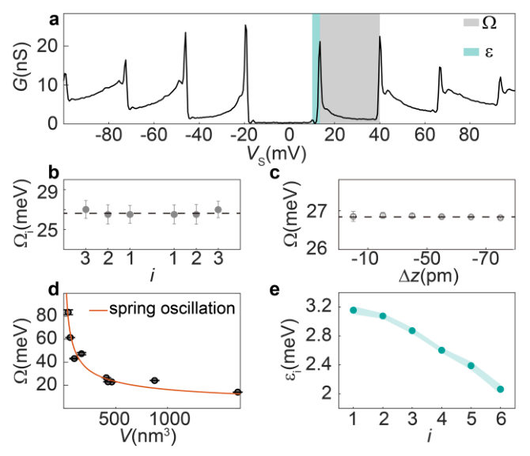
<figcaption class="paper-figure-caption"><b>Fig 3.</b> Figure 3. Mechanical motion of the overlayer and its coupling to the collective excitation. a Typical point dI/dV spectroscopy taken on top of a stack with a 17 ML overlayer (VS = 100 mV, It = 600 pA, Vmod = 200 𝜇V). Shaded regions indicate the energies for collective excitations and phonon excitations respectively. b Phonon energy Ω for different harmonic order. c Phonon energy Ω as a function of ∆z. d Phonon energy Ω as a function of overlayer volume. Red line is a fit based on classical spring oscillation. e Collective excitation energy 𝜀for different harmonic order. Error bars are obtained from the gaussian fitting of each peak and indicated by the shaded regions.</figcaption>
</figure>
<figure class="paper-figure-card">
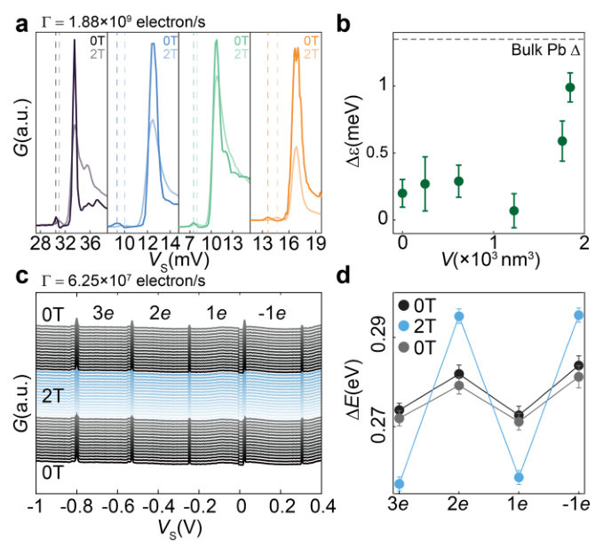
<figcaption class="paper-figure-caption"><b>Fig 4.</b> Figure 4. Quantifying the collective excitation behavior in magnetic field. a Normalized point dI/dV spectra taken on four different stacks without field, with out-of-plane magnetic field (B = 2 T, VS = 30 mV, It = 200 pA, Vmod = 500 𝜇V). Dashed lines indicate the energies of peak 𝛼. b Reduction of collective excitation energy Δ𝜀 = 𝜀(0T) – 𝜀(2T)as a function of overlayer volume. c Point dI/dV spectra taken on top of a typical stack with 17 ML overlayer without field, with out-of-plane magnetic field (B = 2 T), and retaken without field (VS = 1 V, It = 200 pA, Vmod = 2 mV). Under each field 16 spectra were taken over a 1 nm2 area to minimize the spatial variations. Excess charge on the...</figcaption>
</figure>
</div>

<p><strong>Summary.</strong> This work uses advanced STM spectroscopy to study electron transport in quantum-confined Josephson junctions. The researchers find that the transport is significantly mediated by a collective excitation mode intrinsic to the junction structure. This mode's energy is highly sensitive to the underlying quantum well states and external fields, offering a novel probe into the superconducting state.</p>
<p><strong>Why it may be interesting.</strong> The coupling between electronic transport (quasiparticles) and collective excitations (plasmons/phonons) in confined superconducting systems is a key area for understanding energy dissipation and superconducting mechanisms in nanoscale devices.</p>
<details>
<summary>Detailed structure</summary>
<p><strong>Main problem.</strong> The study investigates how collective excitation modes mediate quasiparticle transport in nanoscale Josephson junctions that are subject to strong vertical quantum confinement.</p>
<p><strong>Main result.</strong> The transport is strongly enhanced by a collective excitation mode whose energy and the Coulomb gap both show strong modulation dependent on the quantum well states (QWS) of the metallic overlayer.</p>
<p><strong>Method.</strong> The research employs Scanning Tunneling Spectroscopy (STS) on nanoscale Josephson junction stacks, measuring differential conductance (dI/dV) under varying bias, magnetic fields, and tip-sample separation.</p>
<p><strong>Model / system.</strong> The physical system consists of Pb/NaCl/Pb Josephson junction stacks grown on Si(111). The analysis involves modeling the system in the Coulomb blockade regime, considering quantum confinement effects in the metallic overlayers.</p>
<p><strong>Key observables.</strong> Coulomb gap strength, collective excitation energy ($\epsilon$), Quantum Well States (QWS) spectra, and the dependence of these features on overlayer thickness and magnetic field.</p>
<p><strong>Important parameters / regimes.</strong> Temperature (1.2 K), magnetic field (up to 9 T), junction thickness (nanometer scale), and the ratio of charging energy to Josephson energy ($E_C \gg E_J$).</p>
<p><strong>Assumptions / limitations.</strong> The analysis assumes the collective excitation may originate from phonons, plasmons, or polarons, and that the superconducting gap is masked by the strong Coulomb blockade.</p>
<p><strong>Figures summary.</strong> Figures illustrate Coulomb gap spectra showing multi-gap structures, QWS spectra exhibiting bilayer oscillations, and plots detailing the dependence of the collective excitation energy on tip separation and magnetic field.</p>
<p><strong>Paper structure.</strong> The paper systematically characterizes the QWS and Coulomb blockade features, demonstrating the enhancement of transport via a collective mode. It then investigates the dependence of this mode on external perturbations like magnetic fields and mechanical motion, comparing it to known vibrational excitations.</p>
</details>
<details>
<summary>Abstract</summary>
<p>Quantum confinement can strongly modify transport through Josephson junctions. Here, we study local tunneling transport through nanoscale Josephson junction stacks in the Coulomb blockade regime, where the metallic layers exhibit strong vertical quantum confinement. We find that quasiparticle transport is strongly enhanced by a collective excitation mode intrinsic to the junction and localized in the isolated metallic overlayer. We quantify both the collective-mode energy and the Coulomb gap and show that both exhibit strong layer-dependent modulation, consistent with the modulation of the underlying quantum well states. We further investigate how the collective excitation responds to various perturbations, including mechanical motion and an applied magnetic field. Our results suggest that this collective mode is sensitive to quasiparticles near the Fermi level and may therefore provide an indirect probe of the superconducting state.</p>
</details>
<p><sub><a href="#top">↑ back to top</a></sub></p>

<p><a id="paper-2609.21746"></a></p>
<h3 id="impact-of-exciton-phonon-and-exciton-magnon-interaction-on-transport-in-anisotropic-2d-magnetic-semiconductors"><a href="http://arxiv.org/abs/2609.21746v1">Impact of exciton-phonon and exciton-magnon interaction on transport in anisotropic 2D magnetic semiconductors</a></h3>
<p><strong>Authors:</strong> Daniel Erkensten, Katarzyna Sadecka, Marie-Christin Heißenbüttel, Thorsten Deilmann, Ermin Malic<br>
<strong>Type:</strong> theory · <strong>Category:</strong> other · <strong>PDF:</strong> <a href="https://arxiv.org/pdf/2609.21746v1">https://arxiv.org/pdf/2609.21746v1</a><br>
<strong>Analysis basis:</strong> full PDF text, analyzed in chunks
<strong>Topic relevance:</strong> <code>Keldysh / 2PI / non-Gaussian methods</code> <strong>2/5</strong> · <code>methods for driven-dissipative</code> <strong>2/5</strong> · <code>analog quantum simulation</code> <strong>1/5</strong> · <code>correlated / nonlocal dissipation</code> <strong>1/5</strong> · <code>driven-dissipative phase transition</code> <strong>1/5</strong> · <code>quantum measurements</code> <strong>1/5</strong></p>
<div class="figure-strip-hint">↔ Scroll figures horizontally</div>
<div class="paper-figures-scroll">
<figure class="paper-figure-card">
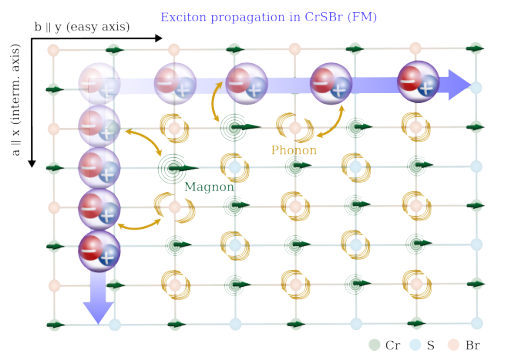
<figcaption class="paper-figure-caption"><b>Fig 1.</b> FIG. 1. Schematic illustration of anisotropic exciton propa- gation in a ferromagnetic CrSBr monolayer in the presence of in-plane phonons and magnons. Magnons are localized on the Cr atoms (green) with the equilibrium magnetic mo- ments being aligned along the b-axis (magnetic easy axis), and phonons are depicted as vibrating atoms (illustrated as outgoing soundwaves).</figcaption>
</figure>
<figure class="paper-figure-card">
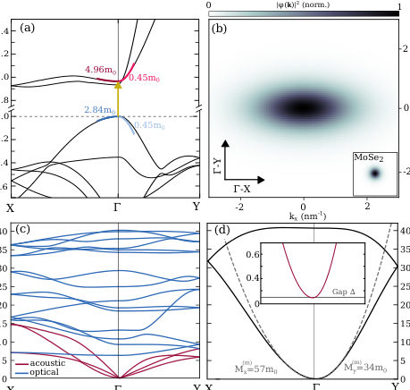
<figcaption class="paper-figure-caption"><b>Fig 2.</b> FIG. 2. Excitons, phonons and magnons in monolayer CrSBr. (a) Electronic band structure along the X-Γ-Y path in the rectangular Brillouin zone obtained from ab initio calcula- tions with the relevant carrier masses stated explicitly. (b) Anisotropic 1s exciton wave function corresponding to the (v, c + 1) transition in (a) obtained by solving the Wannier equation – in comparison with the isotropic 1s wave func- tion of KK excitons in MoSe2 monolayers (inset). The mo- mentum scale is the same for both CrSBr and MoSe2 wave functions. (c) Phonon dispersion with acoustic (red) and opti- cal (blue) modes. (d) Ferromagnetic magnon dispersion with the low-energy magnon mode showing a parabolic...</figcaption>
</figure>
<figure class="paper-figure-card">
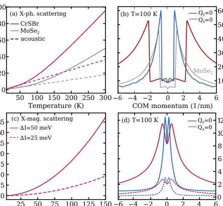
<figcaption class="paper-figure-caption"><b>Fig 3.</b> FIG. 3. Phonon- and magnon-induced dephasing in mono- layer CrSBr. (a) Non-radiative exciton broadening from exci- ton–phonon scattering, showing contributions from acoustic phonons only (dashed) and from both acoustic and optical phonons (solid). For comparison, the linewidth of MoSe2 monolayers is also shown (gray). (b) Direction-dependent momentum-resolved phonon-induced dephasing in CrSBr (red line: scattering along Qx, blue line: scattering along Qy) and isotropic scattering in monolayer MoSe2. (c) Non- radiative exciton broadening due to exciton-magnon scat- tering for different carrier-magnon couplings, ∆I = |Ie − Ih|. (d) Direction-dependent momentum-resolved magnon- induced...</figcaption>
</figure>
<figure class="paper-figure-card">
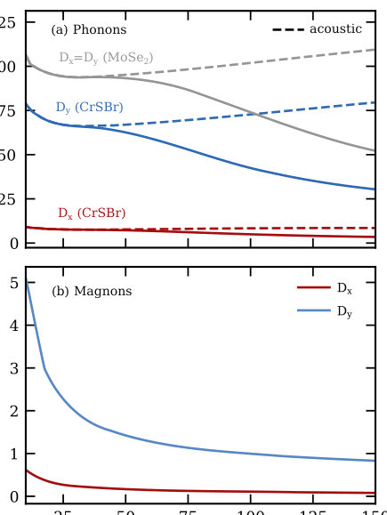
<figcaption class="paper-figure-caption"><b>Fig 4.</b> FIG. 4. Anisotropic exciton propagation in CrSBr mono- layers. (a) Direction-dependent diffusion coefficient due to exciton-phonon scattering in CrSBr (red and blue) in com- parison with the isotropic diffusion coefficient of monolayer MoSe2 (gray). The contributions from acoustic phonons are marked as dashed lines, whereas the solid lines include con- tributions from both acoustic and optical phonons. (b) Exci- ton diffusion due to two-magnon-exciton scattering (carrier- magnon couplings set such that ∆I = |Ie −Ih| = 50 meV).</figcaption>
</figure>
<figure class="paper-figure-card">
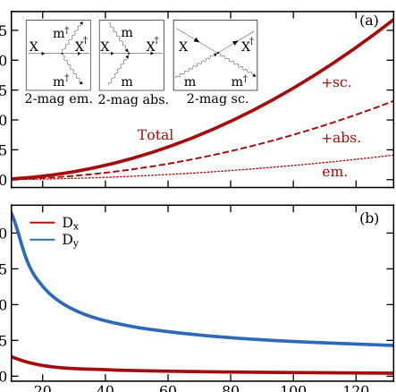
<figcaption class="paper-figure-caption"><b>Fig 5.</b> FIG. 5. Impact of exciton-magnon interaction on exciton transport in CrSBr bilayers. (a) Exciton linewidth due to exciton-magnon interaction. The relevant two-magnon emis- sion, absorption and scattering processes contributing to the linewidth are schematically shown as Feynman diagrams in the insets. Note that the contributions from two-magnon emission (dashed lines), two-magnon absorption and two- magnon scattering are added up cumulatively. (b) Exciton diffusion coefficient in CrSBr bilayers revealing anisotropic propagation in x- and y-directions (red and blue lines, re- spectively).</figcaption>
</figure>
</div>

<p><strong>Summary.</strong> This theoretical work develops a comprehensive many-body framework to model exciton transport in 2D magnetic semiconductors like $ ext{CrSBr}$. It quantifies how coupling to phonons and magnons causes anisotropic scattering, predicting measurable, temperature-dependent signatures in the exciton linewidths and diffusion coefficients.</p>
<p><strong>Why it may be interesting.</strong> The detailed derivation of temperature-dependent dephasing rates ($\propto T^2$ for magnons) and the explicit inclusion of spin-lattice coupling mechanisms provide a rich theoretical framework for understanding open quantum systems in magnetic materials.</p>
<details>
<summary>Detailed structure</summary>
<p><strong>Main problem.</strong> The paper investigates how exciton dynamics and transport in anisotropic 2D magnetic semiconductors are governed by the coupling to lattice vibrations (phonons) and spin excitations (magnons).</p>
<p><strong>Main result.</strong> The quasi-one-dimensional nature of excitons leads to strongly anisotropic scattering, resulting in direction-dependent diffusion coefficients, and the temperature dependence of dephasing rates is characterized by distinct one-phonon and two-magnon signatures.</p>
<p><strong>Method.</strong> The authors developed a microscopic many-body theory, deriving coupled equations of motion for the exciton polarization using techniques like the Heisenberg equation-of-motion and applying approximations such as the Born-Markov approximation.</p>
<p><strong>Model / system.</strong> The system studied is $ ext{CrSBr}$, an anisotropic 2D magnetic semiconductor, modeled using Hamiltonians incorporating exciton, phonon, and magnon terms. The analysis covers both monolayer and bilayer (antiferromagnetic) configurations.</p>
<p><strong>Key observables.</strong> Direction-dependent diffusion coefficients, exciton spectral linewidths, phonon-induced dephasing ($\gamma_{	ext{ph}}(T)$), and magnon-induced dephasing ($\gamma_{	ext{m}}(T)$).</p>
<p><strong>Important parameters / regimes.</strong> Temperature ($T$), exciton binding energy ($    ext{E}_b$), and the magnon gap ($\Delta$).</p>
<p><strong>Assumptions / limitations.</strong> Approximations include the low-density limit for excitons, the use of the Born-Markov approximation, and treating the exciton-magnon interaction via one- and two-magnon terms.</p>
<p><strong>Figures summary.</strong> Figures illustrate the anisotropic exciton propagation, the electronic band structure, phonon dispersion, and magnon dispersion relations in $ ext{CrSBr}$.</p>
<p><strong>Paper structure.</strong> The paper builds the theory by defining the Hamiltonian, deriving the equations of motion for the exciton polarization, and then calculating the dephasing rates separately for phonon and magnon interactions, distinguishing between one- and two-magnon processes.</p>
</details>
<details>
<summary>Abstract</summary>
<p>Two-dimensional magnetic semiconductors provide a unique platform for exploring the interplay between charge, lattice, spin, and light. The strong Coulomb interaction combined with long-range magnetic order enables efficient coupling between excitons and both lattice vibrations and spin excitations, thereby strongly influencing exciton dynamics and transport in these materials. Here, we develop a microscopic many-body theory of exciton--phonon and exciton--magnon interactions in mono- and bilayer CrSBr. We demonstrate that the quasi-one-dimensional character of excitons in CrSBr gives rise to strongly anisotropic exciton--phonon and exciton--magnon scattering, resulting in direction-dependent diffusion coefficients. Furthermore, we identify a distinct temperature dependence originating from one-phonon and two-magnon scattering processes, providing characteristic signatures of the underlying microscopic interactions. Our work establishes a microscopic framework for understanding exciton transport in magnetic van der Waals semiconductors and provides guidance for future optical spectroscopy and exciton transport experiments.</p>
</details>
<p><sub><a href="#top">↑ back to top</a></sub></p>

<p><a id="paper-2609.21041"></a></p>
<h3 id="bend-contour-electron-tomography-bcet-quantitative-strain-and-topography-mapping"><a href="http://arxiv.org/abs/2609.21041v1">Bend Contour Electron Tomography (BCET): Quantitative strain and topography mapping</a></h3>
<p><strong>Authors:</strong> Henry G. Bell, Chenhang Xu, Arthur McCray, Minyong Han, Yicheng Zhuang, Harold Y. Hwang, Colin Ophus, Alfred Zong<br>
<strong>Type:</strong> experiment · <strong>Category:</strong> other · <strong>PDF:</strong> <a href="https://arxiv.org/pdf/2609.21041v1">https://arxiv.org/pdf/2609.21041v1</a><br>
<strong>Analysis basis:</strong> full PDF text, analyzed in chunks
<strong>Topic relevance:</strong> <code>Keldysh / 2PI / non-Gaussian methods</code> <strong>2/5</strong> · <code>methods for driven-dissipative</code> <strong>2/5</strong> · <code>quantum measurements</code> <strong>2/5</strong> · <code>analog quantum simulation</code> <strong>1/5</strong></p>
<div class="figure-strip-hint">↔ Scroll figures horizontally</div>
<div class="paper-figures-scroll">
<figure class="paper-figure-card">
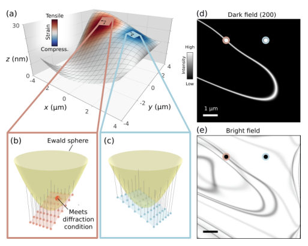
<figcaption class="paper-figure-caption"><b>Fig 1.</b> FIG. 1. Principles of bend contours. (a) An example freestanding thin film of a cubic SrTiO3 lattice that features two regions with compressive (blue) and tensile (red) strains. Tangent planes are drawn at the two respective locations on the film surface. (b, c) Schematic of the local reciprocal lat- tice at each point. Black lines extending to the Ewald sphere (yellow) represent the deviation from meeting the Bragg con- dition; the graphics are vertically stretched for clarity. For the blue region, no diffraction condition is met as none of the reciprocal lattice points reside on the Ewald sphere. In the pink region, the (200) peak (red dot) resides on the Ewald sphere, leading to locally...</figcaption>
</figure>
<figure class="paper-figure-card">
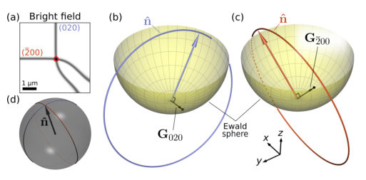
<figcaption class="paper-figure-caption"><b>Fig 2.</b> FIG. 2. Surface normal constrained by the bend con- tours. (a) Simulated bright-field electron micrograph with two intersecting bend contours: (200) and (020). (b) Illus- tration of the constraints on the surface normal vector ˆn at positions along the (020) contour. First, G020 is constrained to the Ewald sphere. Second, ˆn must be perpendicular to G020 in this cubic lattice example. Hence, ˆn must fall on to a point prescribed by the blue circle. (c) Schematic for the corresponding normal vector constraint at all locations on the (200) contour. (d) At the intersection point of the two bend contours [red circle in (a)], combining constraints from (b) and (c) uniquely determines ˆn up to a...</figcaption>
</figure>
<figure class="paper-figure-card">
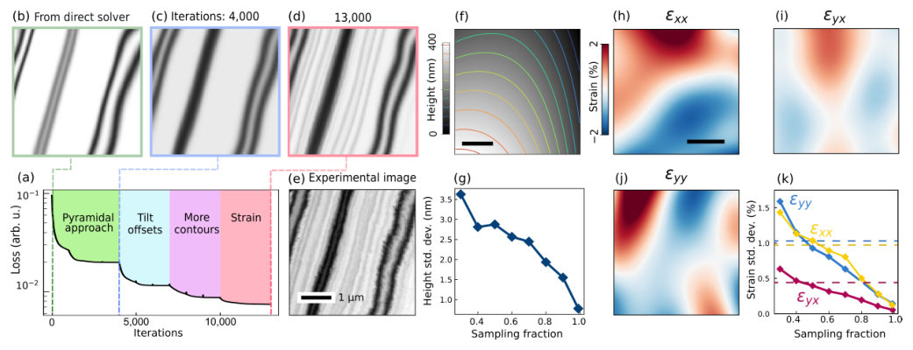
<figcaption class="paper-figure-caption"><b>Fig 3.</b> FIG. 3. Iterative reconstruction of a SrTiO3 thin film. (a) The loss function in Eq. (1) over different iterations. Colored regions refer to different parts of the multiphase optimization procedure; see main text and Sec. S8 of the Supplemental Material for details. (b–d) Simulated bright-field micrographs at zero-tilt throughout the multiphase optimization: (b) initial guess from the direct solver, (c) after the pyramidal optimization on the Bézier control points, and (d) the final converged solution. (e) Experimental image at zero tilt; data at other tilt angles are shown in Fig. S7 of the Supplemental Material. High spatial frequency deviations between the optimized [panel (d)] and...</figcaption>
</figure>
<figure class="paper-figure-card">
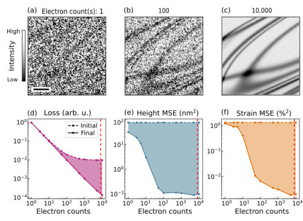
<figcaption class="paper-figure-caption"><b>Fig 4.</b> FIG. 4. Assessment of reconstruction accuracy at varying noise levels. (a–c) Representative simulated elec- tron micrographs with Poisson noise generated using 1, 100, and 10,000 electron counts per pixel, respectively. Scale bar: 1 µm. (d–f) Electron count-dependent MSE compared to the ground truth for the initial and final loss, height, and strain. Vertical dashed lines denote the experimental noise condition, estimated using a screen current of 1.38 nA for 1 s acquisition using a detector with 1, 024 × 1, 024 pixels.</figcaption>
</figure>
</div>

<p><strong>Summary.</strong> This work introduces Bend Contour Electron Tomography (BCET), a novel computational framework to quantitatively map strain and topography in freestanding quantum thin films using wide-field TEM images. By treating the analysis as an inverse problem, BCET reconstructs strain and surface geometry without requiring scanning probes. This opens new avenues for studying how spatial strain inhomogeneity governs phase transitions in 2D quantum materials.</p>
<p><strong>Why it may be interesting.</strong> While focused on condensed matter characterization, the use of iterative, physics-constrained inverse problem solving and multi-scale optimization techniques is highly relevant to computational physics methods applicable in quantum simulation.</p>
<details>
<summary>Detailed structure</summary>
<p><strong>Main problem.</strong> The challenge is to quantitatively map sub-micrometer, nonuniform strain fields and topography in freestanding quantum thin films, especially for fast, dynamical measurements.</p>
<p><strong>Main result.</strong> The authors developed BCET, a framework that successfully reconstructs local strain distributions and curvature fields in $    ext{SrTiO}_3$ films using wide-field TEM imaging.</p>
<p><strong>Method.</strong> BCET treats the problem as a physics-constrained inverse problem, iteratively minimizing a loss function comparing measured bend contours to simulated images derived from a parameterized surface geometry and strain tensor.</p>
<p><strong>Model / system.</strong> The study uses freestanding thin films of quantum materials, specifically $ ext{SrTiO}_3$, which naturally develop strain fields. The analysis relies on interpreting bend contours observed in transmission electron microscope images.</p>
<p><strong>Key observables.</strong> Quantitative 2D maps of in-plane strain tensor fields and surface morphology (topography).</p>
<p><strong>Important parameters / regimes.</strong> Sub-micrometer length scales; varying sample tilt angles ($ heta_a,     heta_eta$); strain tensor components.</p>
<p><strong>Assumptions / limitations.</strong> The method assumes the ability to vary sample tilt angles (tomography concept) and uses a Bézier surface mesh for parameterization, which may limit nanoscale resolution.</p>
<p><strong>Figures summary.</strong> Figures illustrate the principles of bend contours using $ ext{SrTiO}_3$ films, showing how compressive/tensile strain regions correlate with observable contrast in simulated dark-field TEM images.</p>
<p><strong>Paper structure.</strong> The paper introduces the problem, details the BCET computational framework (forward model, inverse minimization), applies it to $  ext{SrTiO}_3$ films, and demonstrates the quantitative reconstruction of strain and topography.</p>
</details>
<details>
<summary>Abstract</summary>
<p>Freestanding thin films of quantum materials naturally develop sub-micrometer, nonuniform strain fields that strongly affect their electronic, magnetic, and structural properties in both equilibrium and nonequilibrium conditions. However, current methods to quantitatively resolve these mesoscopic features are primarily restricted to scanning probes, making it challenging for dynamical measurements such as single-shot imaging and femtosecond microscopy. Here, we present a new computational framework which we denote as bend contour electron tomography (BCET), which efficiently converts bend contours in transmission electron microscope images into quantitative two-dimensional maps of strain and topography. By iteratively minimizing a designed loss function between experimental and simulated bend contour images, BCET retrieves both surface morphology and in-plane strain tensor fields without requiring scanning or diffraction mapping. We applied BCET to freestanding SrTiO$_3$ thin films, demonstrating the successful reconstruction of the local strain distribution and curvature field with high fidelity. Our approach provides a quantitative framework for characterizing mesoscale structures in freestanding films using wide-field imaging, opening new avenues to investigate how spatial inhomogeneity governs phase transitions and nonequilibrium dynamics in two-dimensional quantum materials.</p>
</details>
<p><sub><a href="#top">↑ back to top</a></sub></p>

<p><a id="paper-2609.22001"></a></p>
<h3 id="photogalvanic-effect-in-monolayers-of-transition-metal-dichalcogenides"><a href="http://arxiv.org/abs/2609.22001v1">Photogalvanic effect in monolayers of transition metal dichalcogenides</a></h3>
<p><strong>Authors:</strong> G. V. Budkin, E. L. Ivchenko<br>
<strong>Type:</strong> theory · <strong>Category:</strong> other · <strong>PDF:</strong> <a href="https://arxiv.org/pdf/2609.22001v1">https://arxiv.org/pdf/2609.22001v1</a><br>
<strong>Analysis basis:</strong> full PDF text, analyzed in chunks
<strong>Topic relevance:</strong> <code>Keldysh / 2PI / non-Gaussian methods</code> <strong>2/5</strong> · <code>methods for driven-dissipative</code> <strong>2/5</strong></p>
<div class="figure-strip-hint">↔ Scroll figures horizontally</div>
<div class="paper-figures-scroll">
<figure class="paper-figure-card">
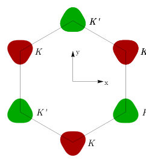
<figcaption class="paper-figure-caption"><b>Fig 1.</b> FIG. 1: Schematic illustration of the Brillouin zone of a TMDC monolayer. Direct band gaps are located at the K and K′ vertices. A trigonal warping of the electronic spec- trum has opposite orientations in the valleys K and K′.</figcaption>
</figure>
<figure class="paper-figure-card">
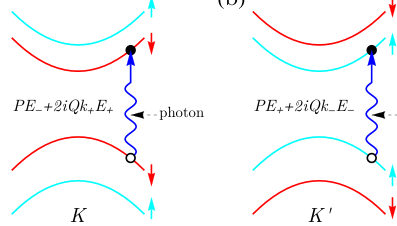
<figcaption class="paper-figure-caption"><b>Fig 2.</b> FIG. 2: The band structure of MoX2 monolayers the near the fundamental gap at K (a) and K′ (b) points. Wavy blue lines illustrate the photon absorption transitions, labeled by terms of the matrix elements responsible for the LPGE current gen- eration.</figcaption>
</figure>
</div>

<p><strong>Summary.</strong> This paper presents a comprehensive theoretical study of the photogalvanic effect in TMD monolayers, developing a microscopic theory to calculate both the shift and ballistic photocurrent components. It finds that the Coulomb interaction between photoexcited carriers enhances the ballistic current, making it the dominant contribution in these 2D semiconductors. This work advances the understanding of nonlinear optical responses in TMDs by providing a rigorous separation of these two key physical mechanisms.</p>
<p><strong>Why it may be interesting.</strong> The detailed separation and quantitative comparison of the ballistic and shift contributions provide a deeper understanding of nonlinear optical responses in 2D materials, which is crucial for designing next-generation photovoltaic or optoelectronic devices.</p>
<details>
<summary>Detailed structure</summary>
<p><strong>Main problem.</strong> The paper theoretically investigates the photocurrent generated by linearly polarized radiation in monolayers of transition metal dichalcogenides (TMDs), specifically separating and analyzing the contributions from the ballistic and shift mechanisms.</p>
<p><strong>Main result.</strong> The theory demonstrates that in typical 2D semiconductors, the Coulomb correlation between photoexcited electrons and holes causes the ballistic contribution to dominate over the shift photocurrent.</p>
<p><strong>Method.</strong> A microscopic theory using perturbation theory applied to the density matrix evolution equation is developed to calculate the dc electric photocurrent, separating it into distinct ballistic and shift components.</p>
<p><strong>Model / system.</strong> The system is modeled as monolayers of TMDs, which are 2D semiconductors lacking inversion symmetry. The theory utilizes a minimal two-band Hamiltonian and accounts for the electron-hole Coulomb interaction.</p>
<p><strong>Key observables.</strong> The dc electric photocurrent (j), which is decomposed into the shift photocurrent (j_shift) and the ballistic photocurrent (j_ball).</p>
<p><strong>Important parameters / regimes.</strong> The ratio of the ballistic to shift current ($\chi_{	ext{ball}} / \chi_{	ext{shift}}$), the exciton Bohr radius ($a_B$), and the mean free path ($l$).</p>
<p><strong>Assumptions / limitations.</strong> The theory assumes a two-band model and incorporates finite decay of excited states ($\hat{\gamma}$); the calculation is valid in specific limits regarding photon energy relative to the band gap and exciton binding energy.</p>
<p><strong>Figures summary.</strong> Figure 1 shows the hexagonal Brillouin zone of a TMD monolayer with direct band gaps at K and K' vertices. Figure 2 illustrates the band structure near the fundamental gap, highlighting matrix elements relevant for LPGE current generation.</p>
<p><strong>Paper structure.</strong> The paper develops the theory by first establishing the general formalism for the photocurrent, then deriving separate expressions for the shift and ballistic contributions using density matrix formalism, and finally comparing the magnitudes of these two contributions.</p>
</details>
<details>
<summary>Abstract</summary>
<p>We present a theoretical study of photocurrents generated by direct optical transitions induced by linearly polarized radiation in monolayers of transition metal dichalcogenides. A microscopic theory of both the ballistic and shift contributions to the photocurrent is developed that accounts for Coulomb attraction between photoexcited electrons and holes. It is demonstrated that, in typical 2D semiconductors, the Coulomb correlation causes the ballistic contribution to dominate over the shift photocurrent.</p>
</details>
<p><sub><a href="#top">↑ back to top</a></sub></p>

<p><a id="paper-2609.20958"></a></p>
<h3 id="pressure-and-proximity-tuned-twisted-bilayer-graphene"><a href="http://arxiv.org/abs/2609.20958v1">Pressure and Proximity Tuned Twisted Bilayer Graphene</a></h3>
<p><strong>Authors:</strong> David T. S. Perkins, Joseph J. Betouras<br>
<strong>Type:</strong> theory · <strong>Category:</strong> strongly correlated electrons · <strong>PDF:</strong> <a href="https://arxiv.org/pdf/2609.20958v1">https://arxiv.org/pdf/2609.20958v1</a><br>
<strong>Analysis basis:</strong> full PDF text, analyzed in chunks
<strong>Topic relevance:</strong> <code>analog quantum simulation</code> <strong>2/5</strong> · <code>Keldysh / 2PI / non-Gaussian methods</code> <strong>1/5</strong></p>
<div class="figure-strip-hint">↔ Scroll figures horizontally</div>
<div class="paper-figures-scroll">
<figure class="paper-figure-card">
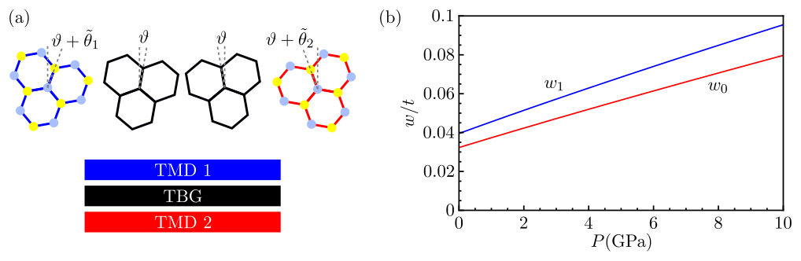
<figcaption class="paper-figure-caption"><b>Fig 1.</b> Figure 1: (a): Schematic of an encapsulated TBG sample with the twist angle between the graphene layers given by θ = 2ϑ, whilst the twists between a graphene layer and its proximitising TMD partner are denotedby ˜θl (l = 1, 2). (b): Variation of w0 and w1 with applied pressure assuming d(AA) ⊥ /d(AB) ⊥ remains constant.</figcaption>
</figure>
<figure class="paper-figure-card">
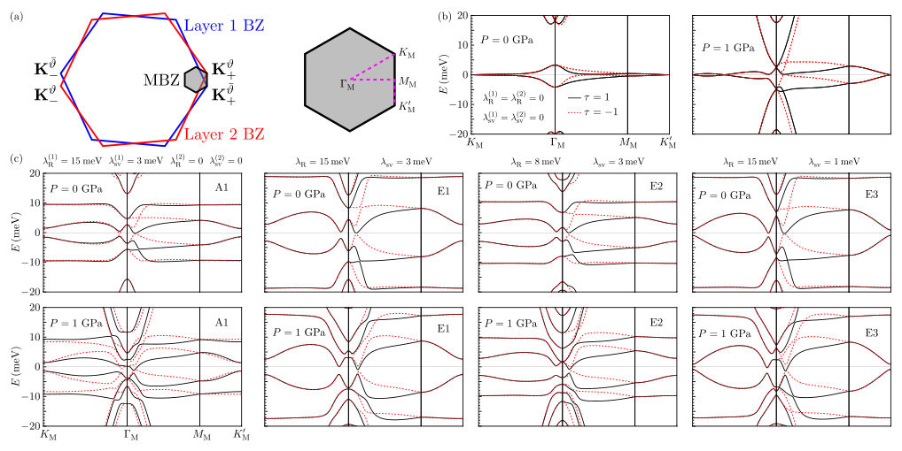
<figcaption class="paper-figure-caption"><b>Fig 2.</b> Figure 2: MBZ construction and band structures for TBG at the first magic angle of the unproximitised system, θ = 1.05◦, for various choices of the proximity-induced SOCs at zero pressure and 1 GPa and a schematic for the different proximitisation setups. (a): construction of the MBZ from the BZs of the individual graphene layers. (b): Band structure of regular MATBG with no proximity induced SOC. Solid black (dashed red) lines are calculated in the τ = 1 (τ = −1) valley of the monolayer. (c): Band structures for proximity-coupled MATBG systems A1, E1, E2, and E3 from left to right for zero pressure (top) and 1 GPa pressure (bottom).</figcaption>
</figure>
<figure class="paper-figure-card">
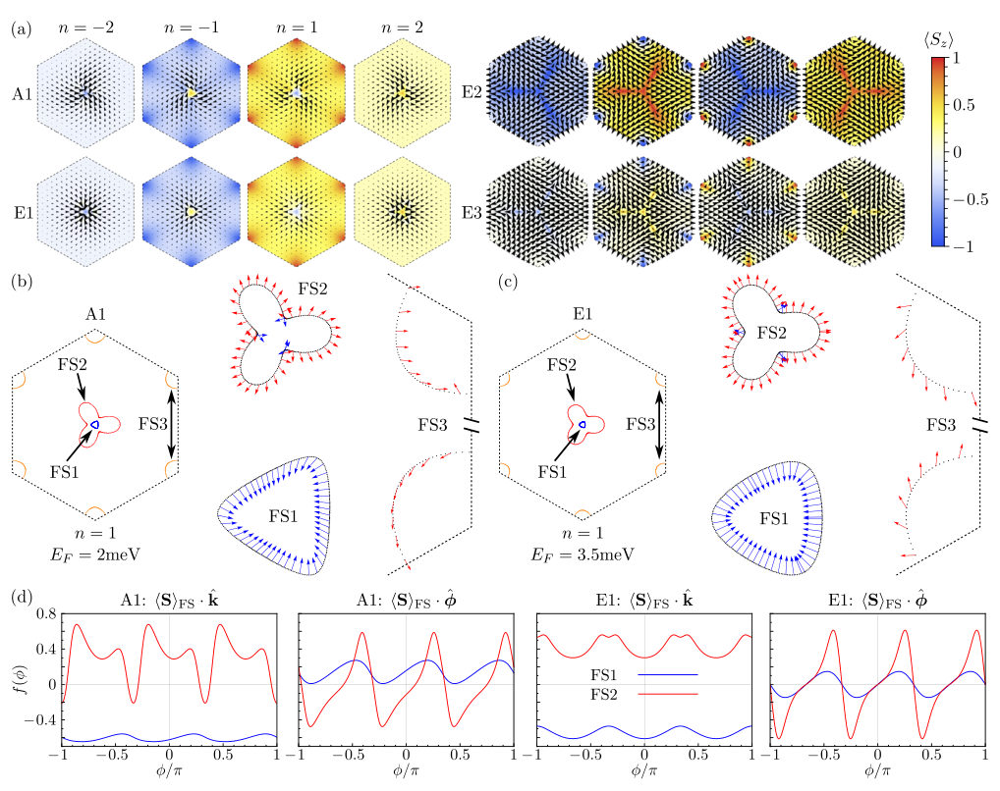
<figcaption class="paper-figure-caption"><b>Fig 3.</b> Figure 3: Zero pressure spin maps, Fermi surfaces, and spin textures. (a): Spin maps for the |n| = 1, 2 bands of the A1, E1, E2, and E3 systems. The arrows indicate the in-plane spin projection at that point in the MBZ, with the arrow size indicating the magnitude of in-plane spin projection: larger arrow heads represent larger values of ⟨S∥⟩k. The colour density plot in the background encodes the out-of-plane spin projection. Band inversions can be seen to occur near ΓM (KM/K′ M) for A1 and E1 (E2 and E3) in the |n| = 1 bands where the sign of ⟨Sz⟩k can be seen to flip relative to the rest of the band. (b)-(c): Fermi surfaces and spin textures for the n = 1 band of the A1 system at EF = 2...</figcaption>
</figure>
<figure class="paper-figure-card">
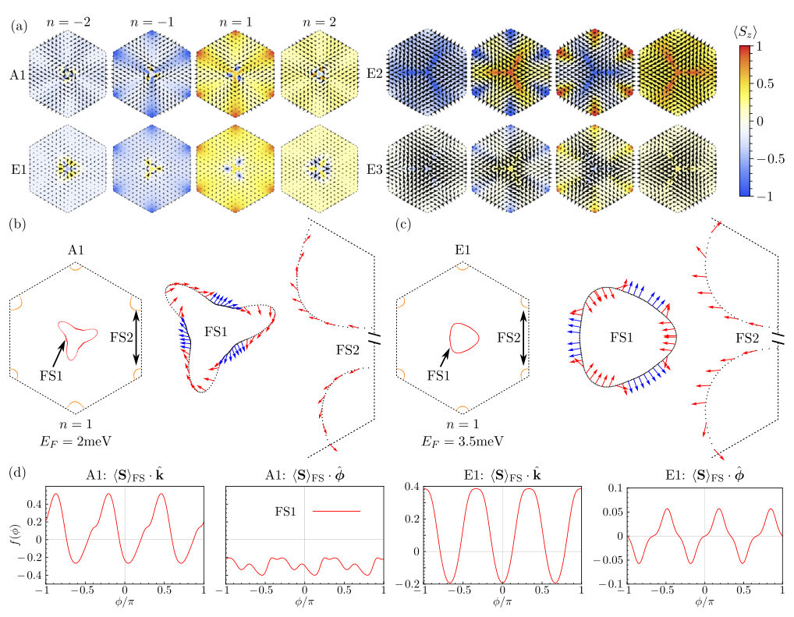
<figcaption class="paper-figure-caption"><b>Fig 4.</b> Figure 4: Pressurised spin maps, Fermi surfaces, and spin textures for P = 1GPa. (a): Spin maps for the |n| = 1, 2 bands of the A1, E1, E2, and E3 systems. The arrows indicate the in-plane spin projection at that point in the MBZ, with the arrow size indicating the magnitude of in-plane spin projection: larger arrow heads represent larger values of ⟨S∥⟩k. The colour density plot in the background encodes the out-of-plane spin projection. Band inversions can be seen to occur near ΓM (KM/K′ M) for A1 and E1 (E2 and E3) in the |n| = 1 bands where the sign of ⟨Sz⟩k can be seen to flip relative to the rest of the band. (b)-(c): Fermi surfaces and spin textures for the n = 1 band of the A1 system...</figcaption>
</figure>
<figure class="paper-figure-card">
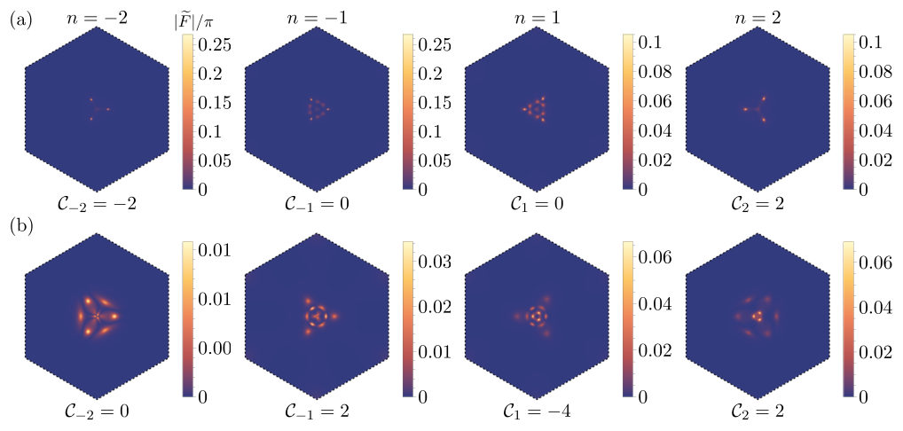
<figcaption class="paper-figure-caption"><b>Fig 5.</b> Figure 5: Berry curvature variation depicted by the lattice field, eF, as defined by Fukui et al. [73] for the spin- split conduction and valence bands at zero pressure (a) and 1 GPa (b) for the E1 system alongside their associated abelian valley Chern number, Cn. The lattice field is calculated using a grid of 200 × 200 points, giving the relation between Berry curvature and lattice field as |Ω|(δk)2 ≈| eF| &lt; π with δk = 8π sin(ϑ)/(199 √</figcaption>
</figure>
</div>

<p><strong>Summary.</strong> This work theoretically investigates how encapsulating twisted bilayer graphene with TMDs and applying uniaxial pressure modifies its electronic topology and spin properties. The researchers demonstrate that the system maintains a purely collinear Edelstein effect and that pressure can tune the band structure and redistribute the Berry curvature. These findings highlight the tunability of moiré heterostructures for advanced spintronic applications.</p>
<p><strong>Why it may be interesting.</strong> The study explores how external tuning parameters (pressure) can control topological properties and spin-charge coupling in engineered 2D materials, which is highly relevant for designing novel spintronic and valleytronic devices.</p>
<details>
<summary>Detailed structure</summary>
<p><strong>Main problem.</strong> To investigate how encapsulation by Transition Metal Dichalcogenides (TMDs) and external uniaxial pressure can drastically alter the topology and spin-charge interconversion processes in moiré heterostructures, specifically twisted bilayer graphene (TBG).</p>
<p><strong>Main result.</strong> The system exhibits a purely collinear Edelstein effect even with non-radial spin texture, and uniaxial pressure can tune the band structure, change the number of active Fermi surfaces, and spread the Berry curvature across the moiré Brillouin zone.</p>
<p><strong>Method.</strong> Theoretical modeling using a continuum Hamiltonian approach, incorporating proximity-induced SOC and pressure effects via interlayer distance modification.</p>
<p><strong>Model / system.</strong> The system is Twisted Bilayer Graphene (TBG) encapsulated by TMDs. The model uses a continuum Hamiltonian derived from the Bistritzer-MacDonald formalism, including terms for SOC and interlayer hopping, with pressure modifying the interlayer distance.</p>
<p><strong>Key observables.</strong> Spin texture (collinear Edelstein effect), band structure, Berry curvature distribution, and the number of active Fermi surfaces.</p>
<p><strong>Important parameters / regimes.</strong> Twist angle ($  heta \approx 1.05^\circ$), applied uniaxial pressure ($P$), and interlayer coupling strengths ($w_0, w_1$).</p>
<p><strong>Assumptions / limitations.</strong> The analysis truncates the Hamiltonian to 10 shells for convergence, and the interlayer coupling strength is modeled based on interpolation between AA and AB stacking distances.</p>
<p><strong>Figures summary.</strong> Figures illustrate the construction of the Moiré Brillouin Zone (MBZ), band structures under varying SOC and pressure, and spin maps showing the evolution of spin texture and Berry curvature.</p>
<p><strong>Paper structure.</strong> The paper systematically analyzes the effect of encapsulation and pressure on the electronic structure, first establishing the spin texture and Edelstein effect, then detailing how pressure tunes the band topology and the quantum geometry (Berry curvature).</p>
</details>
<details>
<summary>Abstract</summary>
<p>The coupling between layered atomically-thin materials mediated by van der Waals forces allows strong electronic correlations, unique topological signatures, and non-trivial spin textures, all of which play an important role in the creation of spin-, valley-, and orbitronic devices. Here, we demonstrate that twisted bilayer graphene encapsulated by transition metal dichalcogenides exhibits a generically non-radial spin texture yet hosts a purely collinear Edelstein effect despite this lack of radial symmetry. Moreover, we show how uniaxial pressure can be used to further tune the band structure and change the number of active Fermi surfaces without compromising the collinear response. Lastly, we illustrate how the quantum geometry changes in the encapsulated twisted graphene bilayer with larger pressures spreading the Berry curvature over large regions of the moiré Brillouin zone. These results illustrate how encapsulation and pressure can be used to drastically alter the topology and spin-charge interconversion processes of moiré heterostructures.</p>
</details>
<p><sub><a href="#top">↑ back to top</a></sub></p>

<p><a id="paper-2609.21488"></a></p>
<h3 id="rydberg-excitons-in-core-shell-nanostructures-i-optical-properties"><a href="http://arxiv.org/abs/2609.21488v1">Rydberg excitons in core-shell nanostructures I. Optical properties</a></h3>
<p><strong>Authors:</strong> Sylwia Zielińska-Raczyńska, Gerard Czajkowski, David Ziemkiewicz<br>
<strong>Type:</strong> theory · <strong>Category:</strong> other · <strong>PDF:</strong> <a href="https://arxiv.org/pdf/2609.21488v1">https://arxiv.org/pdf/2609.21488v1</a><br>
<strong>Analysis basis:</strong> full PDF text, analyzed in chunks
<strong>Topic relevance:</strong> <code>analog quantum simulation</code> <strong>2/5</strong></p>
<div class="figure-strip-hint">↔ Scroll figures horizontally</div>
<div class="paper-figures-scroll">
<figure class="paper-figure-card">
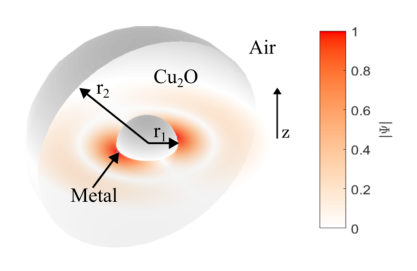
<figcaption class="paper-figure-caption"><b>Fig 1.</b> FIG. 1: Schematic of the considered system; metal ball with a radius r1 is surrounded by a layer of Cu2O with radius r2. Color marks a cross-section of the hole wavefunction of 2P exciton.</figcaption>
</figure>
<figure class="paper-figure-card">
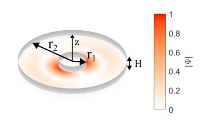
<figcaption class="paper-figure-caption"><b>Fig 2.</b> FIG. 2: Schematic of the quantum ring system; metal cylinder with a radius r1 is surrounded by a layer of Cu2O with radius r2. Color marks a cross-section of the hole wavefunction of 2P exciton.</figcaption>
</figure>
<figure class="paper-figure-card">
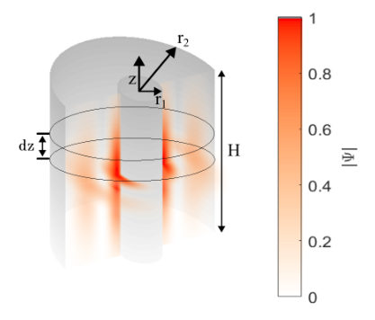
<figcaption class="paper-figure-caption"><b>Fig 3.</b> FIG. 3: Schematic of the quantum rod system; metal cylinder with a radius r1 is surrounded by a layer of Cu2O with radius r2. Color marks horizontal and vertical cross-sections of the hole wavefunction of 2P exciton.</figcaption>
</figure>
<figure class="paper-figure-card">
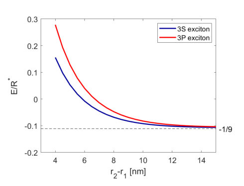
<figcaption class="paper-figure-caption"><b>Fig 4.</b> FIG. 5: Energy of 3S and 3P exciton in a core-shell structure, for r1 = 2 nm, as a function of r2 −r1. Asymptotic bulk limit R∗/9 is marked by a horizontal, dashed line.</figcaption>
</figure>
<figure class="paper-figure-card">
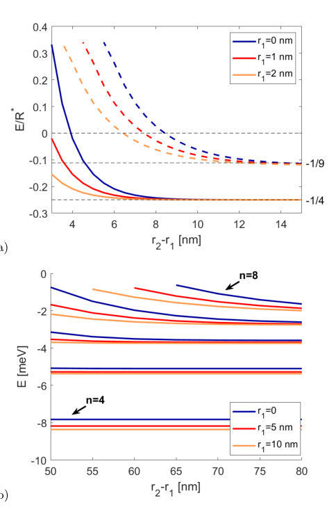
<figcaption class="paper-figure-caption"><b>Fig 5.</b> FIG. 4: a) Energy of a 2P exciton (continuous line) and 3P exciton (dashed line) in a core-shell structure, for three values of r1, as a function of r2 −r1. Asymptotic bulk limits R∗/4, R∗/9 and E = 0 are marked by a horizontal, dashed line. b) Energies of n=4-8 excitons in a core-shell structure, calculated for r1 = 0, 5, 10 nm.</figcaption>
</figure>
</div>

<p><strong>Summary.</strong> This theoretical study calculates the optical response of Rydberg excitons confined in $   ext{Cu}_2   ext{O}$-metal core-shell nanostructures. By employing the Real Density Matrix Approach, the authors model how exciton energy and optical susceptibility are tuned by varying the nanostructure's geometry, extending the analysis from 3D spheres to 2D rings and 1D rods.</p>
<p><strong>Why it may be interesting.</strong> This work directly addresses Rydberg excitons and quantum confinement effects in solid-state systems, which are central topics in AMO physics, quantum optics, and quantum information processing using solid-state emitters.</p>
<details>
<summary>Detailed structure</summary>
<p><strong>Main problem.</strong> The paper investigates the optical properties of Rydberg excitons confined within core-shell semiconductor nanostructures.</p>
<p><strong>Main result.</strong> The study calculates the exciton energy and susceptibility, showing how confinement and geometry strongly tune these optical properties across different nanostructure dimensions.</p>
<p><strong>Method.</strong> The Real Density Matrix Approach (RDMA) is employed, utilizing a two-band effective mass Hamiltonian solved via Schrödinger equations to determine exciton eigenenergies and susceptibility.</p>
<p><strong>Model / system.</strong> The system modeled is a $   ext{Cu}_2   ext{O}$-metal core-shell nanostructure, generalized to include quantum rings and quantum rods. The exciton interaction is governed by a dielectrically screened Coulomb potential.</p>
<p><strong>Key observables.</strong> Exciton energy, excitonic susceptibility ($\chi(\omega, \mathbf{k})$), and the resulting absorption spectrum.</p>
<p><strong>Important parameters / regimes.</strong> Core radius ($r_1$), shell thickness, dimensionality (3D, 2D, 1D effective), and the principal quantum number of the exciton.</p>
<p><strong>Assumptions / limitations.</strong> The electron and hole are confined to the shell, and the calculation uses approximations such as the long wave approximation and specific forms for the Coulomb potential based on geometry.</p>
<p><strong>Figures summary.</strong> Figures schematically illustrate the core-shell, quantum ring, and quantum rod geometries, while other figures detail the behavior of exciton wavefunctions in various limiting cases of the core radius.</p>
<p><strong>Paper structure.</strong> The paper systematically develops the theoretical framework, starting with the general Hamiltonian and the RDMA formalism. It then applies this formalism to model three distinct geometries: 3D core-shell spheres, 2D quantum rings, and intermediate quantum rods, detailing the specific mathematical solutions for each.</p>
</details>
<details>
<summary>Abstract</summary>
<p>Optical properties of Cu$_2$O-metal core-shell nanostructures containing Rydberg excitons are examined. Calculations of electron and hole eigenfunctions and eigenenergies are used to calculate exciton energy and its dependence on system geometry and dimensionality. The limits of very small and very large structures are discussed, making the results applicable to low principal quantum number excitons as well as to Rydberg states. The Real Density Matrix Approach method is used to calculate the optical properties of the studied systems.</p>
</details>
<p><sub><a href="#top">↑ back to top</a></sub></p>

<p><a id="paper-2609.21669"></a></p>
<h3 id="field-free-and-sub-ns-magnetization-reversal-in-synthetic-anti-ferromagnets-using-sequential-spin-orbit-torque-and-spin-transfer-torque-pulses"><a href="http://arxiv.org/abs/2609.21669v1">Field-free and Sub-ns Magnetization Reversal in Synthetic Anti-ferromagnets using Sequential Spin-Orbit Torque and Spin-Transfer Torque Pulses</a></h3>
<p><strong>Authors:</strong> Subham Das, Naveen Sisodia<br>
<strong>Type:</strong> theory · <strong>Category:</strong> other · <strong>PDF:</strong> <a href="https://arxiv.org/pdf/2609.21669v1">https://arxiv.org/pdf/2609.21669v1</a><br>
<strong>Analysis basis:</strong> full PDF text, analyzed in chunks
<strong>Topic relevance:</strong> <code>Keldysh / 2PI / non-Gaussian methods</code> <strong>1/5</strong> · <code>analog quantum simulation</code> <strong>1/5</strong> · <code>driven-dissipative phase transition</code> <strong>1/5</strong> · <code>methods for driven-dissipative</code> <strong>1/5</strong> · <code>non-equilibrium universality</code> <strong>1/5</strong> · <code>quantum measurements</code> <strong>1/5</strong> · <code>scars &amp; prethermalization</code> <strong>1/5</strong></p>
<div class="figure-strip-hint">↔ Scroll figures horizontally</div>
<div class="paper-figures-scroll">
<figure class="paper-figure-card">
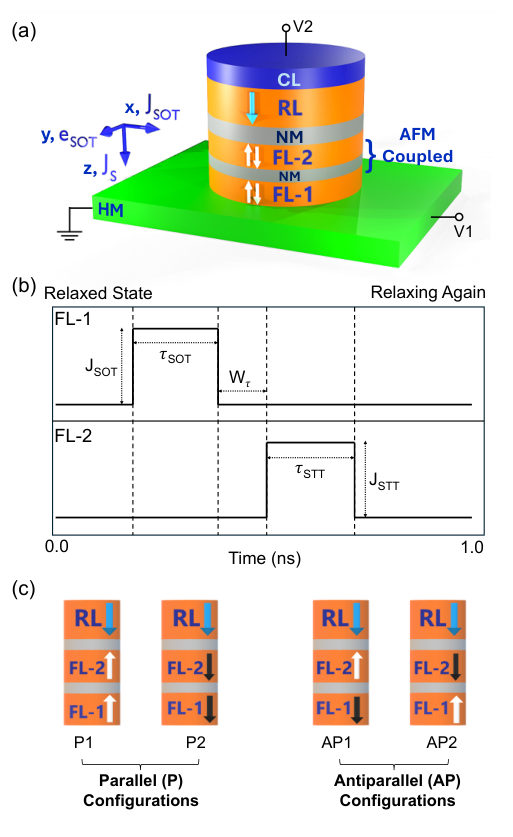
<figcaption class="paper-figure-caption"><b>Fig 1.</b> FIG. 1: (a) A schematic of a three-terminal SAF free- layer based p-MTJ device. (b) SOT and STT pulse pro- file with all the tunable parameters. JSTT and JSOT rep- resent the amplitude of STT and SOT currents, respec- tively, while τSTT and τSOT represent the corresponding current pulse widths. The parameter Wτ represents the delay between the SOT and STT pulses. Wτ is taken to be zero for this work. (c) Four possible magnetization states of the system are shown, with parallel configura- tions (P1 and P2) on the left and anti-parallel configura- tions (AP1 and AP2) on the right.</figcaption>
</figure>
<figure class="paper-figure-card">
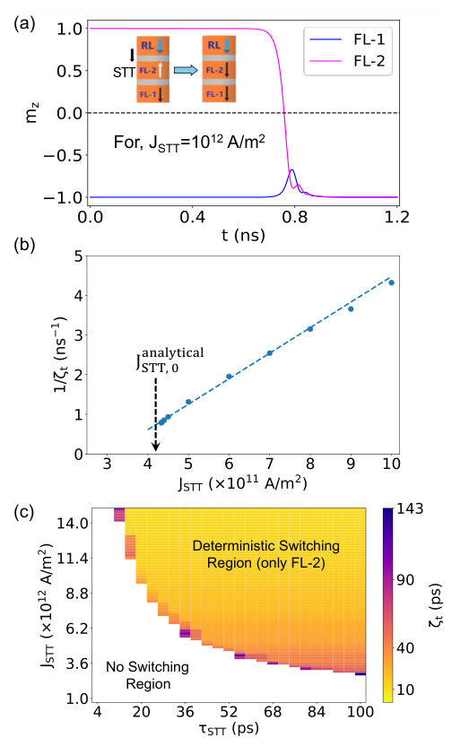
<figcaption class="paper-figure-caption"><b>Fig 2.</b> FIG. 2: (a) Change in the z-component of mag- netization, mz, as a function of time with the ap- plication of continuous STT current of amplitude, JSTT = 1012 A/m2. (b) Inverse of Switching time for FL- 2 (1/ζt) vs. JST T . The extrapolated threshold current density is approximately 3 × 1011 A/m2. (c) Switching Time (ζt) Phasemap for various values of STT current amplitudes (JSTT) and pulsewidths (τSTT). Color repre- sents the switching time, ζt.</figcaption>
</figure>
<figure class="paper-figure-card">
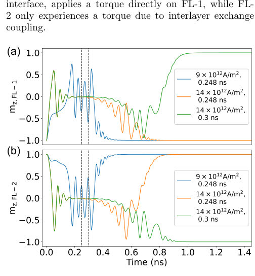
<figcaption class="paper-figure-caption"><b>Fig 3.</b> FIG. 3: mz components of (a) FL-1, (b) FL-2, vs. time for various values of JSOT and τSOT when only SOT is applied on FL-1.</figcaption>
</figure>
<figure class="paper-figure-card">

<figcaption class="paper-figure-caption"><b>Fig 4.</b> Figure 3(a) shows the mz components of FL-1 and FL-2 for three different combinations of SOT pulse am- plitude JSOT and width τSOT. For all three cases, in contrast to the pure-STT case, where a large incubation time was seen before the beginning of the mz transition, for pure-SOT cases, the transition begins immediately with magnetization rotating from out-of-plane (OOP) to in-plane (IP) state with a precessional motion. For a smaller JSOT value of 9 × 1012 A/m2, the magnetiza- tion oscillations have a very large amplitude. For larger JSOT value, this precession quickly decays and pushes the magnetization into a pure IP state. This is seen for the two cases with JSOT = 14 × 1012 A/m2 where...</figcaption>
</figure>
<figure class="paper-figure-card">

<figcaption class="paper-figure-caption"><b>Fig 5.</b> FIG. 4: Switching Time (ζt) phasemap for various val- ues of SOT current amplitudes (JSOT) and pulsewidths (τSOT); (a) for FL-1, (b) for FL-2. The black dashed rectangles show the region of interest for SOT+STT driven switching discussed in Sec. II C. The outset of (b) shows a magnified view of the phasemap within the green dashed rectangle, highlighting three neighboring points (S1, S2, and S3) selected to obtain the phasemaps for STT parameters (Fig. 7).</figcaption>
</figure>
</div>

<p><strong>Summary.</strong> This work numerically investigates magnetization reversal in SAF-MTJs using combined SOT and STT pulses. By applying a sequential SOT-STT protocol, the authors demonstrate achieving field-free, sub-nanosecond switching. This research is crucial for developing next-generation, high-speed, low-power magnetic memory devices.</p>
<p><strong>Why it may be interesting.</strong> While the core physics is spintronics, the detailed, non-linear dynamics governed by coupled differential equations (LLG) and the analysis of switching thresholds via phase diagrams connect to the study of non-equilibrium dynamics and energy landscapes, which are relevant to open quantum systems.</p>
<details>
<summary>Detailed structure</summary>
<p><strong>Main problem.</strong> The research investigates achieving fast, field-free magnetization reversal in Synthetic Antiferromagnets (SAFs) integrated into Magnetic Tunnel Junctions (MTJs). The goal is to utilize sequential spin-orbit torque (SOT) and spin-transfer torque (STT) pulses to achieve sub-nanosecond switching.</p>
<p><strong>Main result.</strong> The sequential SOT-STT pulse protocol successfully drives the magnetization reversal, achieving deterministic switching regions and demonstrating the feasibility of energy-efficient, high-speed operation.</p>
<p><strong>Method.</strong> The study employs a micromagnetic framework to numerically solve the Landau-Lifshitz-Gilbert (LLG) equation, incorporating SOT and STT torque terms.</p>
<p><strong>Model / system.</strong> The physical system is a p-MTJ with a SAF-based free layer. The model incorporates magneto-static, anisotropic, and inter-layer exchange coupling terms, allowing for the simulation of magnetization dynamics in various coupled states (P and AP).</p>
<p><strong>Key observables.</strong> Switching times ($\zeta_t$), threshold current densities ($J_{STT,0}$), and phase maps showing deterministic switching regions.</p>
<p><strong>Important parameters / regimes.</strong> Pulse amplitudes ($J_{	ext{SOT}}, J_{	ext{STT}}$), pulse widths ($ au_{    ext{SOT}},  au_{    ext{STT}}$), and the pulse gap ($W_{ au}$).</p>
<p><strong>Assumptions / limitations.</strong> The effect of STT torque on FL-1 is assumed to be small and is neglected in some simulations; the pulse-gap ($W_{	au}$) is often taken to be zero.</p>
<p><strong>Figures summary.</strong> Figures illustrate the device schematic, the applied SOT/STT pulse profiles, the four possible magnetization states, and time evolution plots of magnetization components ($m_z$) under different pulse sequences.</p>
<p><strong>Paper structure.</strong> The paper progresses by first establishing the physical model (LLG equation with SOT/STT), then comparing pure STT and pure SOT switching mechanisms, and finally detailing the optimized, successive SOT-STT pulse protocol to achieve the fastest and most deterministic switching.</p>
</details>
<details>
<summary>Abstract</summary>
<p>Single free-layer Magnetic Tunnel Junctions (MTJs) with a perpendicular easy axis driven by spin currents have demonstrated fast, deterministic switching, non-volatility, and low-power memory capabilities when integrated with modern nanoelectronic devices. In this article, we numerically investigate sub-ns and field-free switching characteristics of a p-MTJ with a Synthetic Antiferromagnet (SAF) based free layer structure using sequential sub-ns current pulses of Spin Orbit Torque (SOT) and Spin Transfer Torque (STT). While the SOT pulse applied to one layer decreases the transition time by bringing the coupled layers into an in-plane configuration, the subsequent STT pulse on the system determines the switching direction. Various pulse protocols have been investigated for both SOT and STT current amplitude and pulse widths, while also considering the effect of the Reference Layer (RL). While significant regions of deterministic switching events are observed, limitations in SOT, STT parameters are further investigated in presence of thermal fluctuations.</p>
</details>
<p><sub><a href="#top">↑ back to top</a></sub></p>

<p><a id="paper-2609.22023"></a></p>
<h3 id="non-hermitian-impurity-scattering-in-graphene-boltzmann-transport-and-thermoelectric-response"><a href="http://arxiv.org/abs/2609.22023v1">Non-Hermitian impurity scattering in graphene: Boltzmann transport and thermoelectric response</a></h3>
<p><strong>Authors:</strong> Juan A. Cañas, Daniel A. Bonilla, A. Martín-Ruiz<br>
<strong>Type:</strong> theory · <strong>Category:</strong> other · <strong>PDF:</strong> <a href="https://arxiv.org/pdf/2609.22023v1">https://arxiv.org/pdf/2609.22023v1</a><br>
<strong>Analysis basis:</strong> full PDF text, analyzed in chunks
<strong>Topic relevance:</strong> <code>Keldysh / 2PI / non-Gaussian methods</code> <strong>1/5</strong> · <code>correlated / nonlocal dissipation</code> <strong>1/5</strong> · <code>driven-dissipative phase transition</code> <strong>1/5</strong> · <code>methods for driven-dissipative</code> <strong>1/5</strong></p>
<div class="figure-strip-hint">↔ Scroll figures horizontally</div>
<div class="paper-figures-scroll">
<figure class="paper-figure-card">

<figcaption class="paper-figure-caption"><b>Fig 1.</b> FIG. 1: Energy dependence of the macroscopic scattering cross-sections for non-Hermitian impurities with radius a = 3 nm and Hermitian depth U = 20 meV. Top panel (a): Active source regime (W = 0.2 meV). The non-Hermitian cross-section (σabs) is strictly negative. At low energies, the total cross-section (σtot) drops below zero, indicating the threshold where active gain overcomes elastic scattering and destabilizes the semiclassical Boltzmann steady-state. Bottom panel (b): Absorptive sink regime (W = −1 meV). The strictly positive σabs heavily dominates the scattering landscape at low energies, drastically increasing the overall cross-section and suppressing transport. Across both panels,...</figcaption>
</figure>
<figure class="paper-figure-card">

<figcaption class="paper-figure-caption"><b>Fig 2.</b> FIG. 2: Plots of the effective transport relaxation time, calculated using (19), for several positive (top) and negative (bottom) values of the non-Hermiticity parameter W. The dotted gray line indicates the Hermitian baseline (W = 0).</figcaption>
</figure>
<figure class="paper-figure-card">

<figcaption class="paper-figure-caption"><b>Fig 3.</b> FIG. 3: Plots of the longitudinal component of the DC electrical conductivity, calculated using (23), for several positive (top) and negative (bottom) values of the non-Hermiticity parameter W. The dotted gray line indicates the Hermitian baseline (W = 0).</figcaption>
</figure>
<figure class="paper-figure-card">

<figcaption class="paper-figure-caption"><b>Fig 4.</b> FIG. 4: Temperature dependence of the transport coefficients at EF = 330 meV for several non-Hermitian potential strengths W. Top panel (a): longitudinal DC electrical conductivity σ(T). Central panel (b): electronic thermal conductivity κel(T). Bottom panel (c): Normalized Lorenz number L/L0. Across all panels, Solid and dotted lines correspond to gain (W &gt; 0) and loss (W &lt; 0) regimes, respectively, while the solid gray line is the strictly Hermitian baseline W = 0. All curves are computed using the exact integral representation of the Onsager coefficients given in Eq. (22).</figcaption>
</figure>
<figure class="paper-figure-card">

<figcaption class="paper-figure-caption"><b>Fig 5.</b> FIG. 5: Temperature dependence of the thermoelectric generation and efficiency at a fixed quasi-Fermi energy of EF = 330 meV. Top panel (a): Seebeck coefficient S(T). Bottom panel (b): electronic thermoelectric figure of merit ZTel(T). Across both panels, solid and dotted lines correspond to the active source (W &gt; 0) and absorptive sink (W &lt; 0) regimes for various non-Hermitian potential strengths W, while the solid gray line indicates the strictly Hermitian baseline (W = 0). All curves are computed via the exact integral representation of the Onsager coefficients in Eq. (22).</figcaption>
</figure>
</div>

<p><strong>Summary.</strong> This theoretical work analyzes charge and thermoelectric transport in graphene contaminated with non-Hermitian impurities that simulate local carrier gain or loss. By solving the scattering problem exactly and applying a Boltzmann transport approach, the authors show that gain significantly enhances the thermoelectric figure of merit, while loss suppresses it. This demonstrates that non-Hermiticity offers a powerful, controllable knob for tailoring graphene's energy transport properties.</p>
<p><strong>Why it may be interesting.</strong> The explicit incorporation of non-Hermitian physics into transport coefficients provides a concrete, tunable mechanism for engineering electronic properties, which is relevant for open quantum systems modeling energy exchange.</p>
<details>
<summary>Detailed structure</summary>
<p><strong>Main problem.</strong> The study investigates how non-Hermitian impurity scattering, which models local carrier gain or loss, affects charge and thermoelectric transport in graphene.</p>
<p><strong>Main result.</strong> Weak gain enhances both charge and heat conductivities and increases the electronic figure of merit, while absorption produces the opposite effect. Non-Hermitian scattering provides a novel mechanism to control the energy dependence of carrier relaxation.</p>
<p><strong>Method.</strong> The authors combine an exact partial-wave solution for the Dirac scattering problem with a semiclassical Boltzmann transport description.</p>
<p><strong>Model / system.</strong> The system is monolayer graphene subjected to dilute, finite-range non-Hermitian impurities modeled by a complex potential $V(r) = (U + iW)\Theta(a-r)$. The transport is analyzed via the Boltzmann equation, incorporating non-Hermitian flux exchange.</p>
<p><strong>Key observables.</strong> Electrical conductivity, electronic thermal conductivity, Seebeck coefficient, Lorenz ratio, and electronic thermoelectric figure of merit ($ZT_{el}$).</p>
<p><strong>Important parameters / regimes.</strong> Non-Hermitian strength ($W$), impurity density ($n_{ia}$), and temperature ($T$).</p>
<p><strong>Assumptions / limitations.</strong> The analysis assumes a semiclassical Boltzmann description, a dilute disorder limit, and only considers the electronic contribution to thermal transport.</p>
<p><strong>Paper structure.</strong> The paper first derives the nonunitary scattering matrix from the Dirac equation using partial waves, yielding scattering and absorption cross-sections. It then extends this to a semiclassical Boltzmann framework, calculating transport coefficients and analyzing the impact of gain versus loss on the thermoelectric response.</p>
</details>
<details>
<summary>Abstract</summary>
<p>We investigate charge and thermoelectric transport in monolayer graphene containing a dilute distribution of finite-range non-Hermitian scattering centers. The impurities are modeled as circular complex potentials, whose imaginary component describes local carrier loss or gain. By solving the Dirac scattering problem exactly within a partial-wave approach, we obtain the nonunitary scattering matrix and derive the transport and absorption cross sections, which separately characterize momentum relaxation and net carrier exchange with the environment. To connect the microscopic scattering problem with stationary transport, we formulate a semiclassical Boltzmann description in which an external reservoir compensates the equilibrium particle loss or gain. This leads to an effective relaxation time governed by both elastic momentum scattering and non-Hermitian flux exchange. Using the full energy-dependent relaxation time, we evaluate the Onsager coefficients and the resulting electrical conductivity, electronic thermal conductivity, Seebeck coefficient, Lorenz ratio, and electronic thermoelectric figure of merit. We find that weak gain increases the effective carrier lifetime and enhances both charge and heat conductivities, while absorption produces the opposite behavior. More importantly, gain enhances the magnitude of the thermopower and the electronic figure of merit, whereas loss suppresses them. The Lorenz ratio remains close to the Sommerfeld value, with non-Hermiticity mainly modifying its finite-temperature corrections. Our results show that non-Hermitian scattering provides an additional mechanism for controlling the energy dependence of carrier relaxation and, consequently, the thermoelectric response of graphene.</p>
</details>
<p><sub><a href="#top">↑ back to top</a></sub></p>

<p><a id="paper-2609.21727"></a></p>
<h3 id="symmetry-properties-of-bound-states-in-the-continuum-in-hexagonal-lattice-photonic-crystal-slabs"><a href="http://arxiv.org/abs/2609.21727v1">Symmetry Properties of Bound States in the Continuum in Hexagonal Lattice Photonic Crystal Slabs</a></h3>
<p><strong>Authors:</strong> Rhys Jones, Sang Soon Oh<br>
<strong>Type:</strong> theory · <strong>Category:</strong> other · <strong>PDF:</strong> <a href="https://arxiv.org/pdf/2609.21727v1">https://arxiv.org/pdf/2609.21727v1</a><br>
<strong>Analysis basis:</strong> full PDF text, analyzed in chunks
<strong>Topic relevance:</strong> <code>analog quantum simulation</code> <strong>1/5</strong> · <code>interference shaping light</code> <strong>1/5</strong></p>
<div class="figure-strip-hint">↔ Scroll figures horizontally</div>
<div class="paper-figures-scroll">
<figure class="paper-figure-card">

<figcaption class="paper-figure-caption"><b>Fig 1.</b> FIG. 1: (a) and (b) The symmetries of a PhC belonging to the C6v group in real and reciprocal space respectively. High symmetry points and lines in reciprocal space are shown. (c) Band structure of the same PhC calculated using the finite-element method (FEM) method in COMSOL Multiphysics. Simulation details are provided in Section IV. (d) Illustrative diagram explaining the method for calculating the far-field polarisation. (e) Far-field polarisation distributions for different topological charges (TCs).</figcaption>
</figure>
<figure class="paper-figure-card">

<figcaption class="paper-figure-caption"><b>Fig 2.</b> FIG. 2: Electromagnetic fields within a unit cell for each of the 6 irreps with n = 0. Colour plot shows the imaginary part of the magnetic field. Arrows represent the real part of the electric field. While any linear combination of Ei(1) and Ei(2) for i = 1, 2 are an acceptable basis function, the angular momentum basis vectors (x, y) and (x2 −y2, −2xy) have been chosen as the basis functions for convenience.</figcaption>
</figure>
<figure class="paper-figure-card">

<figcaption class="paper-figure-caption"><b>Fig 3.</b> FIG. 3: The four possible methods by which the parity can decompose. Solid lines represent the far-field polarisation, while dotted lines represent the high symmetry lines with odd parity. (a) and (b) possess a TC of 1, while (c) and (d) possess a TC of -2.</figcaption>
</figure>
<figure class="paper-figure-card">

<figcaption class="paper-figure-caption"><b>Fig 4.</b> FIG. 4: Near-field distribution of the unit cell in the six bound resonance / BIC modes at the Γ point. The colour plot shows the distribution of the imaginary component of the magnetic field, while the arrows represent the direction of the electric field.</figcaption>
</figure>
</div>

<p><strong>Summary.</strong> This paper investigates the symmetry properties of Bound States in the Continuum (BICs) in hexagonal photonic crystal slabs using group theory. By analyzing the system's irreducible representations and applying $k \cdot p$ theory, the authors determine that the confinement quality factor and topological charge are fundamentally governed by the underlying crystal symmetry. This provides a powerful theoretical framework for designing next-generation photonic devices.</p>
<p><strong>Why it may be interesting.</strong> The rigorous application of group theory to photonic band structure analysis provides powerful tools for predicting and understanding mode confinement, which is crucial for designing high-quality optical cavities relevant to quantum optics and photonics.</p>
<details>
<summary>Detailed structure</summary>
<p><strong>Main problem.</strong> The paper aims to develop a fundamental understanding of Bound States in the Continuum (BICs) within photonic crystal (PhC) cavities by analyzing their symmetry properties.</p>
<p><strong>Main result.</strong> The analysis uses group theory and $k \cdot p$ perturbation theory to characterize BICs, showing that their quality factor scaling and topological charge are dictated by the irreducible representation symmetry of the lattice.</p>
<p><strong>Method.</strong> The study employs a group theoretical approach based on the $C_{6v}$ space group symmetry, combined with $k \cdot p$ perturbation theory and the calculation of far-field polarization via Stokes parameters.</p>
<p><strong>Model / system.</strong> The physical system is a photonic crystal slab with a hexagonal lattice structure. The analysis determines the basis functions for the irreducible representations (irreps) of this system.</p>
<p><strong>Key observables.</strong> Quality factor ($Q$), Topological Charge ($T_C$ or $q$), Far-field polarization angle ($\psi(\mathbf{k}_{\|})$), and the symmetry-derived basis functions.</p>
<p><strong>Important parameters / regimes.</strong> The $C_{6v}$ point group symmetry, the wave vector $\mathbf{k}$ near the $\Gamma$ point, and the coupling strength to the radiative mode.</p>
<p><strong>Assumptions / limitations.</strong> The analysis focuses on the TE mode polarization and utilizes the $k \cdot p$ theory near the $\Gamma$ point for far-field analysis.</p>
<p><strong>Figures summary.</strong> Figures illustrate the symmetry properties in real and reciprocal space, the band structure, and the method for calculating far-field polarization distributions for various modes.</p>
<p><strong>Paper structure.</strong> The paper proceeds by first establishing the symmetry framework using group theory to find basis functions for the $C_{6v}$ irreps. It then applies $k \cdot p$ theory and reflection parity to determine far-field polarization and topological charges, concluding with an analysis of how the $Q$ factor depends on the irrep symmetry.</p>
</details>
<details>
<summary>Abstract</summary>
<p>Bound states in the continuum (BICs) within photonic crystal (PhC) cavities realise the full confinement of light despite lying within the continuum of radiation modes. While their diverse practical applications has attracted considerable research interest, developing the fundamental understanding of BICs is important for the design of future devices. This paper uses a group theoretical approach to determine the basis functions of the irreducible representations (irreps) of a PhC with the symmetry of the $C_{6v}$ space group, from which the spatial distribution of the electromagnetic fields within the cavity can be determined. Furthermore, the reflection parity of the electric field and a $k \cdot p$ perturbation theory approach are used to determine the far-field polarisation of each irrep. The $k \cdot p$ perturbation explains why the $E_2$ irrep has a topological charge of $-2$, as well as showing that a topological charge does not necessarily indicate the presence of a BIC. Additionally, it is found that the quality factor of the modes do not necessarily scale as $Q \propto 1/|k|^{2|q|}$, but are instead dependent on the coupling to the radiative mode in the $k \cdot p$ perturbation, which is determined from the symmetry of each irrep.</p>
</details>
<p><sub><a href="#top">↑ back to top</a></sub></p>

<p><a id="paper-2609.21289"></a></p>
<h3 id="projective-representation-theory-of-spin-space-groups"><a href="http://arxiv.org/abs/2609.21289v1">Projective representation theory of spin space groups</a></h3>
<p><strong>Authors:</strong> Zheng Zhang, Peiyuan Wang, Y. X. Zhao<br>
<strong>Type:</strong> theory · <strong>Category:</strong> other · <strong>PDF:</strong> <a href="https://arxiv.org/pdf/2609.21289v1">https://arxiv.org/pdf/2609.21289v1</a><br>
<strong>Analysis basis:</strong> full PDF text, analyzed in chunks
<strong>Topic relevance:</strong> <code>analog quantum simulation</code> <strong>1/5</strong></p>
<div class="figure-strip-hint">↔ Scroll figures horizontally</div>
<div class="paper-figures-scroll">
<figure class="paper-figure-card">

<figcaption class="paper-figure-caption"><b>Fig 1.</b> Low-resolution page preview, page 2</figcaption>
</figure>
<figure class="paper-figure-card">

<figcaption class="paper-figure-caption"><b>Fig 2.</b> Low-resolution page preview, page 3</figcaption>
</figure>
<figure class="paper-figure-card">

<figcaption class="paper-figure-caption"><b>Fig 3.</b> Low-resolution page preview, page 4</figcaption>
</figure>
<figure class="paper-figure-card">

<figcaption class="paper-figure-caption"><b>Fig 4.</b> Low-resolution page preview, page 5</figcaption>
</figure>
<figure class="paper-figure-card">

<figcaption class="paper-figure-caption"><b>Fig 5.</b> Low-resolution page preview, page 6</figcaption>
</figure>
</div>

<p><strong>Summary.</strong> This work establishes a comprehensive representation-theoretic foundation for studying magnetic crystals by developing a unified theory for Spin Space Groups. It tackles the mathematical difficulty posed by the projective nature of these symmetries using an extended Mackey theory. The resulting framework predicts novel physical consequences, such as modified Brillouin zones and symmetry-enforced topological phases, for weak spin-orbit coupling materials.</p>
<p><strong>Why it may be interesting.</strong> While focused on condensed matter symmetry, the rigorous development of projective representation theory and group extensions provides powerful mathematical tools applicable to any system where symmetries are described by non-trivial factor systems, including those studied in quantum optics or AMO physics.</p>
<details>
<summary>Detailed structure</summary>
<p><strong>Main problem.</strong> The paper addresses the need for a general, unified representation theory for Spin Space Groups (SSGs) because their projective nature complicates standard group and double-group representation methods.</p>
<p><strong>Main result.</strong> The authors develop a canonical decomposition of the magnetic factor system into translational, mixed, and point-group factors, allowing for the construction of all projective irreducible corepresentations for various SSG classes.</p>
<p><strong>Method.</strong> The theory employs Mackey's theory of group extensions, extending it to handle antiunitary symmetries and developing a systematic framework based on the decomposition of the factor system.</p>
<p><strong>Model / system.</strong> The theory applies to magnetic crystals characterized by weak spin-orbit coupling, using the SSG as the fundamental symmetry framework for describing their electronic and magnetic properties.</p>
<p><strong>Key observables.</strong> Symmetry-enforced Zak phases, reconstructed high-symmetry momenta, and the identification of new types of quasiparticles.</p>
<p><strong>Important parameters / regimes.</strong> The structure of the factor system $
u$, which decomposes into $\sigma$ (translational), $\gamma$ (mixed), and $\alpha$ (point-group) factors.</p>
<p><strong>Assumptions / limitations.</strong> The central assumption is that the physical symmetries can be systematically classified and analyzed by extending Mackey's theory to account for the projective nature of the spin operations.</p>
<p><strong>Paper structure.</strong> The paper reviews the group structure of SSGs, develops the theory in two stages (projective corepresentations of the quotient group, then the full SSG), and finally derives physical consequences regarding symmetry constraints and Brillouin spaces.</p>
</details>
<details>
<summary>Abstract</summary>
<p>Spin space groups provide the natural symmetry framework for magnetic crystals with weak spin-orbit coupling, but extracting their physical consequences requires a general theory of irreducible representations. The central difficulty is that spin space groups are represented projectively: their factor systems can render lattice translations noncommuting, induce nonsymmorphic actions in momentum space, and modify the projective structure of little cogroups. These effects lie beyond conventional space-group and double-group representation theory. Here, using Mackey's theory of group extensions, we develop a unified constructive framework for all collinear, coplanar, and noncoplanar spin space groups, including antiunitary symmetries and general factor systems. A central technical result is a canonical decomposition of the relevant factor system $ν$ into a translational factor $σ$, a mixed factor $γ$ coupling translations to point-group operations, and a point-group factor $α$. This decomposition makes transparent how ordinary representation theory is modified: $σ$ determines the projective translation algebra and the appropriate Brillouin zone, $γ$ controls the momentum-space group action and can make it nonsymmorphic, and $α$ contributes to the factor systems of little cogroups. On this basis, we construct all projective irreducible corepresentations by induction over momentum-space orbits. The framework identifies which nonsymmorphic momentum-space symmetries can be realized by spin space groups and reveals Brillouin spaces that are compact flat manifolds rather than tori, symmetry-enforced Zak phases, reconstructed high-symmetry momenta and band degeneracies, and new types of quasiparticles. Our results establish the representation-theoretic foundation for systematic studies of weak-spin-orbit-coupled magnetic materials.</p>
</details>
<p><sub><a href="#top">↑ back to top</a></sub></p>

<p><a id="paper-2609.21825"></a></p>
<h3 id="topological-properties-and-gap-structure-of-the-paired-state-in-twisted-tmd-bilayers-within-a-two-band-effective-model"><a href="http://arxiv.org/abs/2609.21825v1">Topological properties and gap structure of the paired state in twisted TMD bilayers within a two-band effective model</a></h3>
<p><strong>Authors:</strong> Palash Saha, Michał Zegrodnik<br>
<strong>Type:</strong> theory · <strong>Category:</strong> strongly correlated electrons · <strong>PDF:</strong> <a href="https://arxiv.org/pdf/2609.21825v1">https://arxiv.org/pdf/2609.21825v1</a><br>
<strong>Analysis basis:</strong> full PDF text, analyzed in chunks
<strong>Topic relevance:</strong> <code>Keldysh / 2PI / non-Gaussian methods</code> <strong>1/5</strong></p>
<div class="figure-strip-hint">↔ Scroll figures horizontally</div>
<div class="paper-figures-scroll">
<figure class="paper-figure-card">

<figcaption class="paper-figure-caption"><b>Fig 1.</b> FIG. 1. (a) The sign of the direction dependent complex phase for the spin-up hoppings (σz = 1) to the six NNN neighbors [cf. Eq. (1)]. The remaining hopping amplitudes shown in the figure are real. The green and black dots represent the lattice sites corresponding to MX and XM, stacking configu- rations, respectively. The position of Van Hove singularity in (b) influences the behavior of the superconducting gap away from half-filling as shown in the following.</figcaption>
</figure>
<figure class="paper-figure-card">

<figcaption class="paper-figure-caption"><b>Fig 2.</b> FIG. 2. Dispersion relations and Fermi surfaces of the effec- tive two-band non-interacting model. Panels (a) and (b) show the band dispersions for two selected values of the displace- ment field, while panels (c) and (d) show the corresponding Fermi surfaces at half filling. The blue and red curves de- note the two spin sectors. In the dispersion plots, the thicker (thinner) curves correspond to the spin-up (spin-down) sec- tor. For non-zero displacement field, single particle bands are topological with the two spin sectors carrying opposite value of the Chern number (C = ±1).</figcaption>
</figure>
<figure class="paper-figure-card">

<figcaption class="paper-figure-caption"><b>Fig 3.</b> FIG. 3. Symmetry resolved superconducting gap amplitudes corresponding to mixed spin-singlet d + id and spin-triplet p −ip paired state as a function of band filling n and displacement field D. In (a-d) the exchange interaction parameters are J1 = 5.6 meV and J2 = 2.4 meV, while for the bottom (e-h) J1 = 2.8 meV and J2 = 1.2 meV. The ratio of the exchange parameters ( J1/J2 = 7/3) is selected from 4t2/U where the on-site Coulomb repulsion U = 95 meV,|t1| = 5.689 meV and |t2| = 3.715 meV. We provide only the l = 1 component of the gap since the l = 2 shows the same behavior with approximately same absolute value.</figcaption>
</figure>
<figure class="paper-figure-card">

<figcaption class="paper-figure-caption"><b>Fig 4.</b> FIG. 4. Superconducting singlet gap at band filling ntot = 3.5 as a function of J1 and J2 for (a) D = 0 and (b) D = 10 meV. For D = 10 meV, panels (c) and (d) show the induced inter- orbital and intra-orbital gap components upon varying J1 at fixed J2 = 5 meV and varying J2 at fixed J1 = 5 meV, respec- tively. The triplet component exhibits the same qualitative evolution and is not shown for clarity.</figcaption>
</figure>
<figure class="paper-figure-card">

<figcaption class="paper-figure-caption"><b>Fig 5.</b> FIG. 5. Panels (a) and (b) show the magnitude of the superconducting gap for the mixed d + id and p −ip pairing states, while panel (c) presents the orbital-resolved carrier concentration as a function of D for ntot = 3.5, J1 = J2 = 10 meV, and U = 95 meV. The dashed line marks the topological transition in the superconducting bands. Panels (d)–(g) show the corresponding superconducting band structures for increasing displacement field. At D = 0 in (d), the upper superconducting bands are degenerate and carry a total Chern number C = 4; at D = 6 meV in (e), the degeneracy is lifted while the system remains in the same C = 4 phase. Near D = 8.4 meV in (f), the relevant bands touch at the...</figcaption>
</figure>
</div>

<p><strong>Summary.</strong> This theoretical study analyzes superconductivity in twisted TMD bilayers using an effective two-band model incorporating electron-electron interactions. By applying mean-field theory, the authors map out the superconducting phase diagram, revealing that the pairing state is topologically non-trivial. The work demonstrates how external fields can drive topological phase transitions while stabilizing unconventional superconducting pairing.</p>
<p><strong>Why it may be interesting.</strong> The interplay between strong correlation effects (treated via mean-field interactions) and topological band structure in a solid-state platform like TMDs is highly relevant to modern condensed matter theory, particularly concerning unconventional superconductivity.</p>
<details>
<summary>Detailed structure</summary>
<p><strong>Main problem.</strong> The study investigates the topological properties and superconducting gap structure that emerge in twisted TMD bilayers due to electron-electron interactions.</p>
<p><strong>Main result.</strong> The superconducting state is found to be topologically non-trivial, exhibiting a mixed singlet-triplet pairing character, and its stability is governed by the evolution of the Van Hove singularity and the applied displacement field.</p>
<p><strong>Method.</strong> The authors employ a theoretical mean-field approach, utilizing the Hartree-Fock approximation on an effective two-band Kane-Mele-like model.</p>
<p><strong>Model / system.</strong> The system is twisted TMD bilayers, modeled by an effective two-band Hamiltonian incorporating nearest, next-nearest, and second nearest-neighbor hoppings. Interactions are treated via onsite Coulomb repulsion and intersite exchange terms.</p>
<p><strong>Key observables.</strong> Superconducting gap symmetry, Chern number (topological invariant), superconducting gap magnitude, and orbital-resolved carrier concentration.</p>
<p><strong>Important parameters / regimes.</strong> Band filling ($n$), applied displacement field ($D$), and interaction strengths ($U, J_1, J_2$).</p>
<p><strong>Assumptions / limitations.</strong> The analysis relies on the Hartree-Fock mean-field approximation for interactions, and the model assumes the adiabatic integration out of certain orbital degrees of freedom.</p>
<p><strong>Figures summary.</strong> Figures illustrate band dispersions, Fermi surfaces, and the evolution of the superconducting gap magnitude and band structures as a function of the displacement field, highlighting topological phase transitions.</p>
<p><strong>Paper structure.</strong> The paper progresses by first establishing the non-interacting model, then applying the mean-field treatment to the interaction terms to find the superconducting pairing symmetries, and finally analyzing how the superconducting phase diagram and topological invariants change with external tuning parameters like $D$ and $n$.</p>
</details>
<details>
<summary>Abstract</summary>
<p>We present a theoretical study motivated by the recent experimental results which demonstrate superconductivity emerging from flat topological bands of twisted transition metal dichalcogenide (TMD) bilayers. To capture the non-trivial band topology of the system, we employ an effective two-band Kane-Mele-like model and substitute it with Coulomb repulsion and inter-site pairing interactions treated at the Hartree-Fock mean-field level. Assuming a real-space pairing scenario, we analyze the resulting superconducting gap symmetry and the stability of the paired state as a function of band filling and applied displacement field. Finally, we highlight the interplay between superconductivity and non-trivial topology, detailing how interaction-induced effects and the evolution of the density of states shape the resulting superconducting phase diagram.</p>
</details>
<p><sub><a href="#top">↑ back to top</a></sub></p>
<h3 id="other-secondary-papers-5">Other secondary papers (5)</h3>
<details>
<summary>Show other secondary papers</summary>

<p><a id="paper-2609.21835"></a></p>
<h3 id="failure-of-conventional-roughness-metrics-in-assessing-field-limiting-mesoscopic-topography-in-srf-nb-films-on-cu"><a href="http://arxiv.org/abs/2609.21835v1">Failure of Conventional Roughness Metrics in Assessing Field-Limiting Mesoscopic Topography in SRF Nb Films on Cu</a></h3>
<p><strong>Authors:</strong> Eric M. Lechner, Brandi Redman, Theodore S. Cahall, Anne-Marie Valente-Feliciano<br>
<strong>Type:</strong> theory · <strong>Category:</strong> other · <strong>PDF:</strong> <a href="https://arxiv.org/pdf/2609.21835v1">https://arxiv.org/pdf/2609.21835v1</a><br>
<strong>Analysis basis:</strong> abstract only; PDF text extraction failed or PDF unavailable</p>
<p><strong>Summary.</strong> This work analyzes how the nanoscale corrugations on superconducting Nb films impact SRF cavity performance. It shows that standard roughness measurements are insufficient because local geometric features can cause significant magnetic field enhancements. Furthermore, the study demonstrates that impurity diffusion can mitigate these detrimental nanoscale field enhancements.</p>
<p><strong>Why it may be interesting.</strong> The detailed analysis of local field enhancement due to geometry, which is a form of boundary condition effect, is relevant to understanding energy dissipation and boundary effects in quantum systems.</p>
<details>
<summary>Detailed structure</summary>
<p><strong>Main problem.</strong> The paper investigates how the nanoscale, corrugated surface morphology of superconducting Nb films affects the performance metrics of superconducting radio frequency (SRF) cavities.</p>
<p><strong>Main result.</strong> Conventional roughness metrics fail to capture the impact of nanoscale features, as these features can cause substantial local field enhancement and significantly suppress the Bean-Livingston barrier, even on seemingly smooth surfaces.</p>
<p><strong>Method.</strong> The authors calculated magnetic field enhancement factors and superheating field suppression factors using the London model applied to a representative corrugated geometry.</p>
<p><strong>Model / system.</strong> The system is superconducting Nb thin films deposited on Cu substrates, exhibiting a characteristic corrugated surface morphology with mesoscopic features comparable to the London penetration depth and coherence length.</p>
<p><strong>Key observables.</strong> Magnetic field enhancement factors, superheating field suppression factors, and near-surface impurity distributions.</p>
<p><strong>Important parameters / regimes.</strong> London penetration depth, coherence length, and the scale of mesoscopic surface features.</p>
<p><strong>Assumptions / limitations.</strong> The analysis is performed within the framework of the London model.</p>
<p><strong>Paper structure.</strong> The paper examines the impact of the characteristic corrugated surface morphology on SRF cavity performance, calculates field enhancement/suppression factors, and investigates the role of impurity diffusion in mitigating these nanoscale magnetic field enhancements.</p>
</details>
<details>
<summary>Abstract</summary>
<p>A characteristic corrugated surface morphology of Nb films on Cu is identified, with mesoscopic features comparable to the London penetration depth and coherence length, and its impact on superconducting radio frequency cavity performance metrics is examined. Magnetic field enhancement factors and superheating field suppression factors are calculated within the London model for a representative corrugated geometry. These results demonstrate that roughness trends derived from buffered chemical polished and electropolished Nb cavities do not capture the impact of nanoscale surface morphology on SRF Nb thin film performance, as even surfaces that possess low average roughness can contain geometric features that generate substantial local field enhancement and significantly suppress the Bean Livingston barrier. The influence of surface roughness on impurity diffusion is also investigated, which highlights the roles of increased surface area and local geometric confinement in modifying near surface impurity distributions. Tracking the effect of impurity diffusion on the evolution of magnetic field enhancement, we show that geometrically confined impurity distributions can mitigate nanoscale magnetic field enhancement substantially.</p>
</details>
<p><sub><a href="#top">↑ back to top</a></sub></p>

<p><a id="paper-2609.21551"></a></p>
<h3 id="orbital-angular-momentum-accumulation-in-srvo3-thin-films"><a href="http://arxiv.org/abs/2609.21551v1">Orbital angular momentum accumulation in SrVO3 thin films</a></h3>
<p><strong>Authors:</strong> Julien Brehin, Montserrat X. Aguilar-Pujol, Dongwook Go, F. Casanova, J. Fontcuberta, E. Longo<br>
<strong>Type:</strong> both · <strong>Category:</strong> strongly correlated electrons · <strong>PDF:</strong> <a href="https://arxiv.org/pdf/2609.21551v1">https://arxiv.org/pdf/2609.21551v1</a><br>
<strong>Analysis basis:</strong> full PDF text, analyzed in chunks</p>
<div class="figure-strip-hint">↔ Scroll figures horizontally</div>
<div class="paper-figures-scroll">
<figure class="paper-figure-card">

<figcaption class="paper-figure-caption"><b>Fig 1.</b> Fig. 1. Structural and transport characterization of the LSAT/SVO(20.8 nm) thin film. (a) Bragg-Brentano θ-2θ scan around the (002) reflections. Inset: cubic perovskite crystal structure. (b) Phi-scan of the (220) reflection. (c) Longitudinal resistivity ρ plotted versus T. The quadratic dependence is commonly observed in SVO films, indicated by the linear trend with R-square = 0.9995 when ρ(T) plotted versus T2 (see inset). (d) Transverse Hall resistance Rxy versus out-of-plane field Bz at T = 300 K, showing a linear electron-like Hall response.</figcaption>
</figure>
<figure class="paper-figure-card">

<figcaption class="paper-figure-caption"><b>Fig 2.</b> Fig. 2. Angle-dependent magnetoresistance of LSAT/SVO(20.8 nm) at T = 100 K and B = 9 T. (a–c) Schematics of the three magnetic-field rotation planes, α (xy), β (yz), and γ (xz), defined with respect to the current direction x. (d–f) Corresponding longitudinal magnetoresistance ΔρL/ρ as a function of rotation angle. The α-plane data are fitted with the expected cos2 dependence (red solid line in panel d), yielding Aα = (4.0 ± 0.2) × 10⁻⁵. The α and β rotations display the angular dependence expected for Hanle magnetoresistance, whereas the finite modulation observed in the γ plane indicates an additional non-Hanle contribution.</figcaption>
</figure>
<figure class="paper-figure-card">

<figcaption class="paper-figure-caption"><b>Fig 3.</b> Fig. 3. Field-dependent magnetoresistance of SVO films at T = 100 K. (a) Longitudinal magnetoresistance ΔρL/ρ of the LSAT/SVO(20.8 nm) film for magnetic fields applied along the x, y, and z directions. Two independent field sweeps (B1 and B2) are shown for each orientation, confirming the reproducibility of the measurements. (b) Field- dependent resistivity differences Δρₓ₋ᵧ/ρ and Δρz₋ᵧ/ρ, where Δρₓ₋ᵧ ≡ ρₓ − ρᵧ and Δρz₋ᵧ ≡ ρz − ρᵧ. Both differences exhibit a positive, even-in-field response with a similar field evolution, consistent with the expected HMR contribution. Their small deviation at high fields indicates an additional non-Hanle magnetoresistance contribution that depends on the...</figcaption>
</figure>
<figure class="paper-figure-card">

<figcaption class="paper-figure-caption"><b>Fig 4.</b> Figure 4. Thickness and conductivity dependence of the orbital response in SVO films. (a) α-plane magnetoresistance amplitude at T = 100 K and B = 9 T as a function of film thickness; error bars are the formal cos2-fit uncertainties. (b) Saturation- limit lower-bound estimates σOH,LB, calculated using the same reference λOD = 2 nm for all films, plotted as a function of the longitudinal conductivity σxx = 1/ρ(100 K). Vertical bars in panel (b) represent the model sensitivity to λOD varied between 0.5 and 5 nm. The dashed line is a guide to the eye.</figcaption>
</figure>
<figure class="paper-figure-card">

<figcaption class="paper-figure-caption"><b>Fig 5.</b> Figure 5. First-principles electronic structure and intrinsic Hall conductivities of SVO. (a) Calculated electronic band structure of bulk SVO at zero strain. The crystal-field-split V t2g and eg manifolds are indicated, together with the characteristic crystal-field energy scale 10Dq and SOC. (b) Energy dependence of the intrinsic orbital Hall conductivity (solid blue line) and spin Hall conductivity (dashed orange line; multiplied by 10 for visibility), with energy referenced to the Fermi level EF. At EF, the calculated conductivities are σOHDFT = +390 (ħ/e)(Ω cm)⁻¹ and σSHDFT = −12 (ħ/e)(Ω cm)⁻¹, demonstrating a predominantly orbital transverse response.</figcaption>
</figure>
</div>
<p><strong>Summary.</strong> This work reports on the observation of orbital Hall magnetoresistance in $    ext{SrVO}_3$ thin films, confirming the presence of orbital angular momentum transport. By analyzing angle- and field-dependent resistance, the authors extract quantitative values for the orbital Hall conductivity, which align well with first-principles DFT calculations. The findings establish narrow-band $d^1$ oxides as a promising platform for studying orbital electronics.</p>
<p><strong>Why it may be interesting.</strong> While focused on oxides, the detailed study of orbital angular momentum transport and its quantitative comparison between experiment and DFT provides a model for understanding exotic charge/spin/orbital coupling phenomena relevant to strongly correlated systems.</p>
<details>
<summary>Detailed structure</summary>
<p><strong>Main problem.</strong> The study investigates orbital angular momentum transport, specifically the Orbital Hall Effect (OHE), in narrow-band $d^1$ transition metal oxides.</p>
<p><strong>Main result.</strong> The measurements confirm signatures consistent with orbital HMR, and the extracted orbital Hall conductivity ($\sigma_{OH}$) is found to be comparable to theoretical DFT predictions, suggesting orbital transport dominates.</p>
<p><strong>Method.</strong> The research combines angle- and field-dependent magnetoresistance measurements (Hanle magnetoresistance) with Density Functional Theory (DFT) calculations.</p>
<p><strong>Model / system.</strong> The physical system is epitaxial $  ext{SrVO}_3$ (SVO) thin films, which are characterized as narrow-band $d^1$ metallic oxides, studied across varying thicknesses.</p>
<p><strong>Key observables.</strong> Hanle magnetoresistance (HMR) signatures ($\Delta
ho_{x-y}$), orbital Hall conductivity ($\sigma_{OH}$), and the ratio $|\sigma_{OH}^{	ext{DFT}}/\sigma_{\mathrm{SH}}^{	ext{DFT}}| \approx 33$.</p>
<p><strong>Important parameters / regimes.</strong> Orbital diffusion length ($\lambda_{OD}$), orbital Hall angle ($   heta_{OH}$), and the film thickness ($t$).</p>
<p><strong>Assumptions / limitations.</strong> The analysis relies on the diffusive HMR framework, and the calculation of carrier density uses a single-band approximation.</p>
<p><strong>Figures summary.</strong> Figures show $
ho$ vs $T$ (quadratic dependence), $R_{xy}$ vs $B_z$ (linear, electron-like), and angle-dependent magnetoresistance ($\Delta
ho/
ho$) exhibiting $\cos^2$-like modulation.</p>
<p><strong>Paper structure.</strong> The paper progresses from structural characterization and basic transport measurements to detailed analysis of angle-dependent and field-dependent magnetoresistance using the HMR framework to extract orbital transport parameters.</p>
</details>
<details>
<summary>Abstract</summary>
<p>Orbital transport in light transition metals has emerged as a promising route toward angular-momentum electronics, with Hanle magnetoresistance (HMR) providing a direct electrical probe of the orbital Hall effect (OHE) in non-magnetic conductors. Here we report magnetoresistance signatures consistent with orbital HMR in epitaxial SrVO$*3$ (SVO), a narrow-band $d^1$ oxide grown on (001)-oriented (LaAlO$*3$)$*{0.3}$(Sr$*2$TaAlO$*6$)$*{0.7}$ substrates. In films of different thickness and longitudinal resistivity, field-dependent measurements reveal a reproducible positive, even-in-field, and approximately quadratic $Δρ*{x-y}$ response, as expected for HMR. Angular measurements characterize the corresponding magnetoresistance anisotropy and reveal an additional non-Hanle contribution. Density functional theory (DFT) calculations yield an intrinsic orbital Hall conductivity $σ*{\mathrm{OH}}^{\mathrm{DFT}} = 390,(\hbar/e),Ω^{-1}\mathrm{cm}^{-1}$ and a spin Hall conductivity $σ_{\mathrm{SH}}^{\mathrm{DFT}} = -12,(\hbar/e),Ω^{-1}\mathrm{cm}^{-1}$ at the Fermi level, corresponding to $|σ_{\mathrm{OH}}^{\mathrm{DFT}}/σ_{\mathrm{SH}}^{\mathrm{DFT}}| \approx 33$, thus indicating a predominantly orbital response. Using the diffusive HMR framework with $λ_{\mathrm{OD}} = 2$ nm as a reference value, the 20.8 nm film gives conservative saturation-limit lower-bound (LB) estimates $θ_{\mathrm{OH,LB}} = 0.0144 \pm 0.0004$ and $σ_{\mathrm{OH,LB}} = (460 \pm 11),(\hbar/e),Ω^{-1}\mathrm{cm}^{-1}$, comparable to the DFT value. Across the series, lower-bound estimates obtained with the same $λ_{\mathrm{OD}}$ increase overall with longitudinal conductivity. These results suggest that narrow-band $d^1$ metallic oxides are a promising platform for orbital transport.</p>
</details>
<p><sub><a href="#top">↑ back to top</a></sub></p>
<hr>
<p>
<a href="index.html">← Index</a>
 · <a href="papers_04.html">← Previous</a> · <a href="papers_06.html">Next →</a>
</p>
<hr>

</body>
</html>
